Analyse Exploratoire des Données Multidimensionnelles
DU Dataviz
Présentation
Organisation du module de Statistique Exploratoire
- Deux sessions :
- Analyse exploratoire des données multidimensionnelles (9 et 10 Mars)
- Classification automatique ( et Mars)
- Cinq intervenants :
- FX Jollois (à la place de Servane Gey - 9 Mars) et Charles Bouveyron ( Mars) : introduction aux méthodologies
- Antoine-Eric Sammartino (10 Mars), Rachel Verjus et Taoufik En-Najjary ( Mars) : application sur données réelles
Evaluation orale individuelle à la fin de chaque session (10 et Mars)
Validation du module : moyenne des deux évaluations \(\geqslant 10\)
Coordonnées et références
- Deux intervenants :
- FX Jollois (à la place de Servane Gey - 9 Mars) francois-xavier.jollois@parisdescartes.fr | Servane.Gey@parisdescartes.fr
- Antoine-Eric Sammartino (10 Mars) antoine-eric.sammartino@laposte.net
- Références (liste non-exhaustive) :
- Analyse de Données avec R, F. Husson, S. Lê, J. Pagès, Presses Universitaires de Rennes.
- Statistique Exploratoire Multidimensionnelle, L. Lebart, M. Piron, A. Morineau, DUNOD.
- Package R FactoMineR : http://factominer.free.fr/
- MOOC Analyse des Données Multidimensionnelles, F. Husson, sur plateforme FUN.
- Multidimensional Scaling, second edition, T.F. Cox, M. A. A. Cox, Chapman & Hall.
- An Introduction to MDS, F. Wickelmaier : https://homepage.uni-tuebingen.de/florian.wickelmaier/pubs/Wickelmaier2003SQRU.pdf
Planning de la journée
- Tables de données
- Données brutes, tableaux disjonctifs complets
- Tableaux de contingences, tables de Burt
- Analyse en Composantes Principales (ACP)
- Facteurs et Composantes principales
- Valeurs propres et axes factoriels
- Représentations graphiques
- Analyse Factorielle des Correspondances Simples (AFC) et Multiples (ACM)
- AFC sur tableau de contingence
- ACM sur tableau disjonctif complet ou table de Burt
- Représentations graphiques
- Positionnement Multidimensionnel (MDS)
Tables de Données
Données brutes
Recensement aux Etats-Unis en 2012 (données)
x = read.csv2("donnees/Recensement_12.csv", row.names = 1)
head(x, 10) AGE SEXE REGION STAT_MARI SAL_HOR SYNDICAT CATEGORIE
1 58 F NE C 13.25 non Employe
2 40 M W M 12.50 <NA> Construction et Maintenance
3 29 M S C 14.00 <NA> Employe
4 59 M NE D 10.60 <NA> Transports et Service
5 51 M W M 13.00 <NA> Transports et Service
6 19 M <NA> C NA non <NA>
7 64 F S M 19.57 <NA> Production et Agriculture
8 23 F NE C 13.00 <NA> Profession liberale
9 47 M NW M 20.10 oui Construction et Maintenance
10 66 F S D 12.50 non Employe
NIV_ETUDES NB_PERS NB_ENF REV_FOYER
1 BAC+3 2 0 40 - < 60
2 Sans diplome 2 0 < 40
3 BAC+2 2 0 >= 100
4 BAC 4 1 < 40
5 Sans diplome 8 1 >= 100
6 <NA> NA NA <NA>
7 BAC 3 0 60 - < 100
8 BAC+3 2 0 40 - < 60
9 BAC 3 0 40 - < 60
10 BAC 1 0 < 40str(x)'data.frame': 599 obs. of 11 variables:
$ AGE : int 58 40 29 59 51 19 64 23 47 66 ...
$ SEXE : Factor w/ 2 levels "F","M": 1 2 2 2 2 2 1 1 2 1 ...
$ REGION : Factor w/ 4 levels "NE","NW","S",..: 1 4 3 1 4 NA 3 1 2 3 ...
$ STAT_MARI : Factor w/ 5 levels "C","D","M","S",..: 1 3 1 2 3 1 3 1 3 2 ...
$ SAL_HOR : num 13.2 12.5 14 10.6 13 ...
$ SYNDICAT : Factor w/ 2 levels "non","oui": 1 NA NA NA NA 1 NA NA 2 1 ...
$ CATEGORIE : Factor w/ 6 levels "Construction et Maintenance",..: 2 1 2 6 6 NA 4 5 1 2 ...
$ NIV_ETUDES: Factor w/ 7 levels "Autre","BAC",..: 4 7 3 2 7 NA 2 4 2 2 ...
$ NB_PERS : int 2 2 2 4 8 NA 3 2 3 1 ...
$ NB_ENF : int 0 0 0 1 1 NA 0 0 0 0 ...
$ REV_FOYER : Factor w/ 4 levels ">= 100","< 40",..: 3 2 1 2 1 NA 4 3 3 2 ...Traitement univarié des données brutes
summary(x) AGE SEXE REGION STAT_MARI SAL_HOR SYNDICAT
Min. :16.00 F:297 NE :121 C :178 Min. : 2.0 non :142
1st Qu.:29.00 M:302 NW :117 D : 54 1st Qu.:10.5 oui : 25
Median :42.00 S :176 M :303 Median :14.5 NA's:432
Mean :41.85 W :139 S : 13 Mean :17.7
3rd Qu.:53.50 NA's: 46 V : 5 3rd Qu.:21.0
Max. :80.00 NA's: 46 Max. :99.0
NA's :160
CATEGORIE NIV_ETUDES NB_PERS
Construction et Maintenance: 63 BAC :308 Min. : 1.000
Employe : 82 BAC+3 :107 1st Qu.: 2.000
Gestion et Vente :116 BAC+2 : 65 Median : 3.000
Production et Agriculture : 44 Sans diplome: 39 Mean : 3.119
Profession liberale : 89 BAC+5 : 23 3rd Qu.: 4.000
Transports et Service :152 (Other) : 8 Max. :13.000
NA's : 53 NA's : 49 NA's :46
NB_ENF REV_FOYER
Min. :0.0000 >= 100 :110
1st Qu.:0.0000 < 40 :168
Median :0.0000 40 - < 60 :122
Mean :0.5443 60 - < 100:147
3rd Qu.:1.0000 NA's : 52
Max. :6.0000
NA's :46 par(mfrow=c(2,2), mar = c(2, 2, 4, 0) + .1)
pie(table(x$SEXE), radius = 1, init.angle = 90,
col = c("lightgreen","orange"), main = "Sexe")
hist(x$SAL_HOR,
main = "Salaire horaire", col = "gray80",
xlab = "", ylab = "")
p = 100*prop.table(table(x$NB_ENF))
barplot(p, main = "Nombre d'enfants au foyer")
p4 = 100*prop.table(table(x$REV_FOYER))
barplot(p4[c(1,3,4,2)], main = "Revenus du foyer")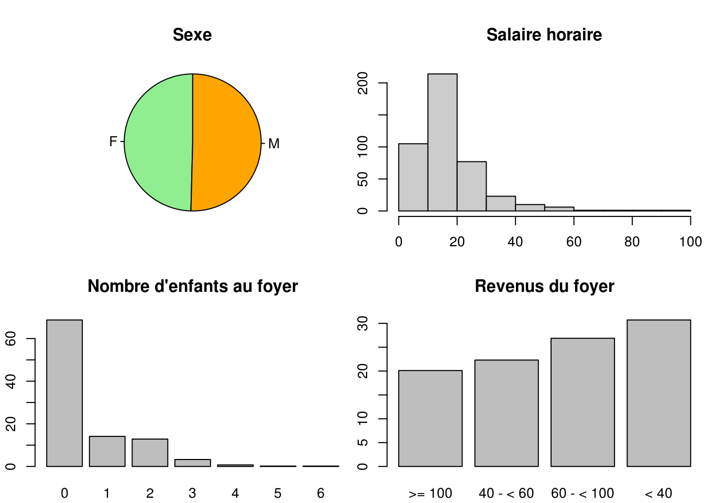
Traitement multivarié : variables quantitatives
Liens entre variables quantitatives :
- covariance et corrélation.
- Traduit la force du lien linéaire entre 2 variable numériques \(X\) et \(Y\) :
\[Cov(X,Y)=\frac{1}{n}\sum_{i=1}^n(x_i-\bar{x})(y_i-\bar{y}),\]
\[Cor(X,Y)=\frac{Cov(X.Y)}{\sigma_X \sigma_Y}\in [-1,1]\]
où \(\bar{\bullet}\) représente la moyenne et \(\sigma_{\bullet}\) l’écart-type.
Plus \(Cor(X,Y)\) est proche de -1 ou 1, et plus les données sont distribuées suivant une droite. Le signe de \(Cor(X,Y)\) traduit une relation croissante (corrélation positive), ou décroissante (corrélation négative).
\(X=(x_i^{(j)})\) tableau (ou matrice) de données numériques brutes à \(n\) lignes (individus) et p colonnes (variables).
\(\Sigma\) matrice des
- variances/covariances : \(\Sigma_{k,j}=Cov(X^{(k)},X^{(j)})\)
- corrélations : \(\Sigma_{k,j}=Cor(X^{(k)},X^{(j)})\)
\(\Sigma\) matrice \(p\times p\) symétrique (définie positive)
Remarque : \[Cov(X^{k},X^{(k)})=\sigma_{X^{(k)}}^2, \ \ Cor(X^{k},X^{(k)})=\frac{\sigma_{X^{(k)}}^2}{\sigma_{X^{(k)}}^2}=1.\]
Lecture simultanée
- des variances (diagonale variances/covariances)
- des liens entre les variables (hors diagonale corrélations)
Traduit les liens des variables 2 à 2.
quanti = c(1,5,9,10)
round(cov(x[,quanti], use = "complete.obs"), digits=2) AGE SAL_HOR NB_PERS NB_ENF
AGE 191.96 39.58 -4.07 -2.09
SAL_HOR 39.58 113.36 -1.65 -0.74
NB_PERS -4.07 -1.65 2.54 0.83
NB_ENF -2.09 -0.74 0.83 0.91round(cov(x[,quanti], use = "pairwise.complete.obs"), digits=2) AGE SAL_HOR NB_PERS NB_ENF
AGE 199.28 39.07 -5.15 -1.97
SAL_HOR 39.07 131.76 -1.65 -0.81
NB_PERS -5.15 -1.65 2.44 0.81
NB_ENF -1.97 -0.81 0.81 0.88round(cor(x[,quanti], use = "complete.obs"), digits=2) AGE SAL_HOR NB_PERS NB_ENF
AGE 1.00 0.27 -0.18 -0.16
SAL_HOR 0.27 1.00 -0.10 -0.07
NB_PERS -0.18 -0.10 1.00 0.55
NB_ENF -0.16 -0.07 0.55 1.00round(cor(x[,quanti], use = "pairwise.complete.obs"), digits=2) AGE SAL_HOR NB_PERS NB_ENF
AGE 1.00 0.24 -0.24 -0.15
SAL_HOR 0.24 1.00 -0.10 -0.08
NB_PERS -0.24 -0.10 1.00 0.55
NB_ENF -0.15 -0.08 0.55 1.00pairs(x[,quanti])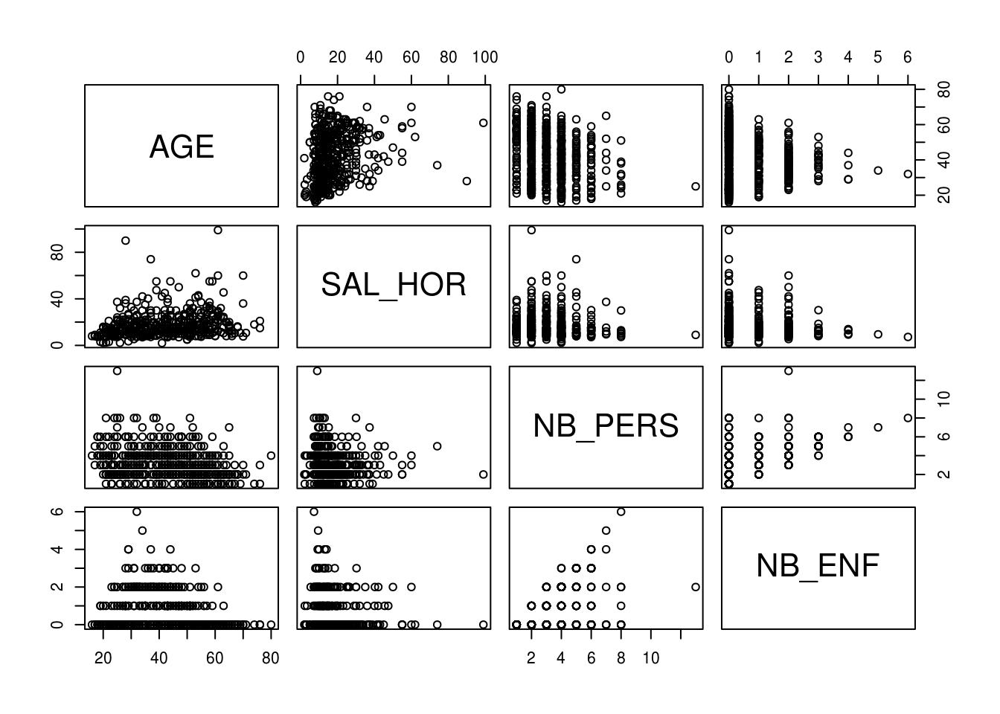
Traitement multivarié : variables qualitatives
Données brutes
Tableau disjonctif complet = recodage des variables qualitatives en autant de variables binaires qu’il y a de modalités.
SEXE REGION REV_FOYER
1 F NE 40 - < 60
2 M W < 40
3 M S >= 100
4 M NE < 40
5 M W >= 100
6 M <NA> <NA>
7 F S 60 - < 100
8 F NE 40 - < 60
9 M NW 40 - < 60
10 F S < 40 SEXE:F SEXE:M REGION:NE REGION:NW REGION:S REGION:W REV_FOYER:>= 100
[1,] 1 0 1 0 0 0 0
[2,] 0 1 0 0 0 1 0
[3,] 0 1 0 0 1 0 1
[4,] 0 1 1 0 0 0 0
[5,] 0 1 0 0 0 1 1
[6,] 0 1 NA NA NA NA NA
[7,] 1 0 0 0 1 0 0
[8,] 1 0 1 0 0 0 0
[9,] 0 1 0 1 0 0 0
[10,] 1 0 0 0 1 0 0
REV_FOYER:< 40 REV_FOYER:40 - < 60 REV_FOYER:60 - < 100
[1,] 0 1 0
[2,] 1 0 0
[3,] 0 0 0
[4,] 1 0 0
[5,] 0 0 0
[6,] NA NA NA
[7,] 0 0 1
[8,] 0 1 0
[9,] 0 1 0
[10,] 1 0 0Données groupées bivariées
Tableau de contingence = distribution jointe des deux variables qualitatives \(X\) et \(Y\).
table(x$SEXE,x$REV_FOYER)
>= 100 < 40 40 - < 60 60 - < 100
F 54 85 64 71
M 56 83 58 76Profils lignes = distributions de la variable colonne \(Y\) conditionnellement aux modalités de la variable ligne \(X\).
100 * prop.table(table(x$SEXE,x$REV_FOYER), margin = 1)
>= 100 < 40 40 - < 60 60 - < 100
F 19.70803 31.02190 23.35766 25.91241
M 20.51282 30.40293 21.24542 27.83883Profils colonnes = distributions de la variable ligne \(X\) conditionnellement aux modalités de la variable colonne \(Y\).
100 * prop.table(table(x$SEXE,x$REV_FOYER), margin = 2)
>= 100 < 40 40 - < 60 60 - < 100
F 49.09091 50.59524 52.45902 48.29932
M 50.90909 49.40476 47.54098 51.70068- Test du \(\chi^2\) d’indépendance pour 2 variables qualitatives : permet de tester si deux variables qualitatives \(X\) et \(Y\) influent l’une sur l’autre.
- Statistique \(T\) du \(\chi^2\) d’indépendance : traduit la distance des profils lignes (resp. colonnes) à la distribution marginale de la variable colonne \(Y\) (resp. ligne \(X\)).
- \(X\) et \(Y\) sont indépendantes si et seulement si tous les profils lignes (resp. colonnes) sont égaux à la distribution marginale correspondante.
- \(\Longrightarrow\) Si \(X\) et \(Y\) sont indépendantes, \(T\) est proche de \(0\).
- Si \(T\) est grande, on rejette l’hypothèse d’indépendance entre \(X\) et \(Y\).
- Le test est dit significatif si sa p-valeur est \(<\) au seuil fixé \(\alpha\) (en général \(\alpha=5\%\)). Dans ce cas, on rejette l’hypothèse d’indépendance entre \(X\) et \(Y\).
summary(table(x$SEXE,x$REV_FOYER))Number of cases in table: 547
Number of factors: 2
Test for independence of all factors:
Chisq = 0.5235, df = 3, p-value = 0.9137Traitement multivarié : variables qualitatives (LPM)
Données groupées multivariées : Table de Burt.
Utile lorsqu’il s’agit de stocker une base de données (enquête, etc…) composée d’un grand nombre d’individus.
SEXE:F SEXE:M REGION:NE REGION:NW REGION:S REGION:W
SEXE:F 297 0 56 60 84 73
SEXE:M 0 302 65 57 92 66
REGION:NE 56 65 121 0 0 0
REGION:NW 60 57 0 117 0 0
REGION:S 84 92 0 0 176 0
REGION:W 73 66 0 0 0 139
REV_FOYER:>= 100 54 56 23 19 34 28
REV_FOYER:< 40 85 83 34 32 47 51
REV_FOYER:40 - < 60 64 58 25 24 42 28
REV_FOYER:60 - < 100 71 76 32 36 45 32
REV_FOYER:>= 100 REV_FOYER:< 40 REV_FOYER:40 - < 60
SEXE:F 54 85 64
SEXE:M 56 83 58
REGION:NE 23 34 25
REGION:NW 19 32 24
REGION:S 34 47 42
REGION:W 28 51 28
REV_FOYER:>= 100 110 0 0
REV_FOYER:< 40 0 168 0
REV_FOYER:40 - < 60 0 0 122
REV_FOYER:60 - < 100 0 0 0
REV_FOYER:60 - < 100
SEXE:F 71
SEXE:M 76
REGION:NE 32
REGION:NW 36
REGION:S 45
REGION:W 32
REV_FOYER:>= 100 0
REV_FOYER:< 40 0
REV_FOYER:40 - < 60 0
REV_FOYER:60 - < 100 147Analyse en Composantes Principales (ACP)
Objectifs de l’ACP
- Méthode descriptive pour l’analyse multivariée de variables quantitatives.
- Permet de représenter des données de grande taille pour :
- la visualisation \(\longrightarrow\) description résumée
- des individus (détection d’individus ou groupes d’individus atypiques),
- des variables (liaisons et sélection).
- la compression \(\longrightarrow\) réduction du nombre de variables,
- le débruitage \(\longrightarrow\) réduction de la variabilité.
- la visualisation \(\longrightarrow\) description résumée
- Citation (Lebart, Piron, Morineau, Chapitre 1)
“Nous cherchons en fait une technique de réduction s’appliquant de façon systématique à divers types de tableaux et conduisant à une reconstitution rapide mais approximative du tableau de départ.”
Cadre
- \(X=(x_i^{(j)})\) tableau (ou matrice) de données numériques brutes à \(n\) lignes (individus) et p colonnes (variables).
- Individu \(i\) assimilé à un point de \(\mathbb{R}^p\) de coordonnées \((x_i^{(1)},\ldots,x_i^{(p)})\) (lecture du tableau en lignes).
- Variable \(j\) assimilée à point de \(\mathbb{R}^n\) de coordonnées \((x_1^{(j)},\ldots,x_n^{(j)})\) (lecture du tableau en colonnes).
head(iris[,-5]) Sepal.Length Sepal.Width Petal.Length Petal.Width
1 5.1 3.5 1.4 0.2
2 4.9 3.0 1.4 0.2
3 4.7 3.2 1.3 0.2
4 4.6 3.1 1.5 0.2
5 5.0 3.6 1.4 0.2
6 5.4 3.9 1.7 0.4Exemple dans \(\mathbb{R}^3\) : Représentation d’un cylindre
Illusion d’optique
Exemple 1 : Représentation dans un plan
Le point de vue adopté par le photographe rend-il convenablement la forme du nuage dans l’espace ?

Fruits
HLP (Husson F., Lê S., Pagès J.)
Exemple 2 : Nuage de points dans \(\mathbb{R}^3\)
Forme difficilement visible dans \(\mathbb{R}^3\)
Nuage 3D
Projections du nuage
Projections du nuage sur les axes de coordonnées \(\Longrightarrow\) 3 nuages de points dans \(\mathbb{R}^2\)
Nuage 2D xy
Exemple 3 : Scatterplot sur les iris de Fisher
plot(iris[,-5])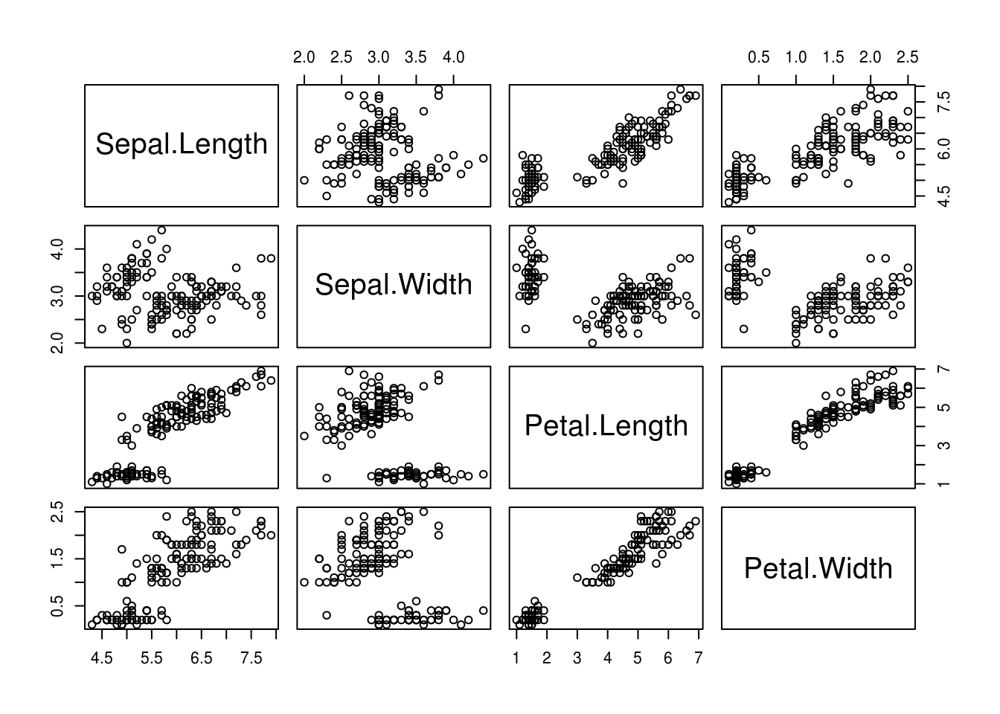
Objectifs et outils
- Objectifs
- Etudier les individus du point de vue de l’ensemble des variables.
- Trouver le(s) meilleur(s) plan(s) afin de rendre compte au mieux de la forme du nuage de points.
- Projection du nuage de points dans \(\mathbb{R}^p\) sur des sous-espaces de dimensions \(q<<p\).
- Outils
- Sous-espaces de dimensions \(q<<p\) construits sur les données de manière à conserver au mieux la forme du nuage dans \(\mathbb{R}^p\).
- Construction de nouvelles variables (=facteurs) concentrant la variance du nuage de points en un petit nombre \(q\) de facteurs.
- Représentation graphique des individus dans des plans minimisant les déformations du nuage de points.
- Représentation graphique des variables dans des plans explicitant les liaisons initiales entre ces variables.
- Réduction de la dimension (=compression) : approximation du tableau de données initial \(n\times p\) par un tableau \(n\times q\).
Principe et définitions
Changement de repère dans \(\mathbb{R}^p\) (individus), ou \(\mathbb{R}^n\) (variables), de manière à concentrer la variabilité du nuage de points sur les premiers facteurs.
Facteurs principaux \((F^{(k)})_{1\leq k\leq q}\) :
- combinaisons linéaires des variables initiales \[F^{(k)} = a_{k,0}+\sum_{j=1}^pa_{k,j}X^{(j)},\]
- 2 à 2 non-corrélées : \(\forall k \neq k' \ \ \ Cor(F^{(k)},F^{(k')})=0\).
Composantes principales \((c^{(1)},\ldots,c^{(q)})\) :
- mesures des individus sur les nouvelles variables \((F^{(1)},\ldots, F^{(q)})\) \[ \forall i\in \{1,\ldots, n\} \ k\in \{1,\ldots,q\} \ \ \ c^{(k)}_i= a_{k,0}+\sum_{j=1}^pa_{k,j}x_i^{(j)},\]
- centrées \(\overline{c^{(k)}}=0\).
Repère Factoriel dans \(\mathbb{R}^p\)
- Construction d’un nouveau repère de \(\mathbb{R}^p\)
- d’origine \(g=(\overline{x}^{(1)},\ldots, \overline{x}^{(p)})\),
- d’axes définis par les facteurs \((F^{(k)})_{1\leq k\leq p}\),
- concentrant la variance du nuage de points sur les premiers axes,
- minimisant les déformations du nuage de points sur les premiers axes.
- Construction basée sur la diagonalisation de la matrice des
- variances/covariances (ACP non-normée)
- corrélations (ACP normée).
Part de variance expliquée par chaque facteur donnée par les valeurs propres de la matrice.
Nouveau repère défini par les vecteurs propres de la matrice, engendrant les facteurs.
Exemple en 2D
Repère \((0,X^{(1)},X^{(2)})\)
Repère d’origine
Repère factoriel \((g,F^{(1)},F^{(2)})\) : axe 1 associé à la plus grande valeur propre, axe 2 associé à la plus petite.
Repère factoriel
Rotation du repère…
Repère factoriel rotation
… et changement d’échelle.
Repère factoriel échelle
Construction du repère factoriel
- \(\Sigma\) : matrice des variances/covariances (ACP non-normée) ou des corrélations (ACP normée) des variables d’origine.
- \(D\) : matrice des variances/covariances des facteurs.
- \(D\) obtenue en diagonalisant \(\Sigma\) : calcul des \(p\) valeurs propres \(\lambda_1\geqslant \ldots \geqslant \lambda_p\) de \(\Sigma\), puis obtention de \(D\) par passage du repère d’origine \((0, X^{(1)}, \ldots, X^{(p)})\) au nouveau repère \((g, F^{(1)}, \ldots, F^{(p)})\).
\[\Sigma \Longrightarrow D=\left(\begin{array}{cccc} \lambda_1 & 0 & \dots & 0 \\ 0 & \lambda_2 & \ddots & \vdots \\ \vdots & \ddots & \ddots & 0 \\ 0 & \dots & 0 & \lambda_p\\ \end{array} \right)\]
Lecture et interprétation des valeurs propres
- \(\lambda_1\geqslant \ldots \geqslant \lambda_p\) valeurs propres de \(\Sigma\), \(D=\mbox{diag}(\lambda_1,\ldots,\lambda_p)\)
- \((F^{(1)}, \ldots, F^{(p)})\) facteurs définissant le nouveau repère.
- \(D\) matrice des variances/covariances des facteurs :
- \(\forall k \neq k' \ \ \ Cor(F^{(k)},F^{(k')})=0\),
- \(\forall k \ \ \ Var(F^{(k)})=\lambda_k\).
- \(I_{tot}=Var(X^{(1)})+\ldots+ Var(X^{(p)})\) variance totale du nuage de points. Alors :
\[\begin{array}{ccl} Tr(D) & = & \lambda_1+\ldots+\lambda_p\\ & = & Tr(\Sigma)=I_{tot} \ \ \ \ \mbox{si variances/covariances}\\ & = & Tr(\Sigma)=p \ \ \ \ \ \ \ \mbox{si corrélations}\\ \end{array}\]
- \(\lambda_1\geqslant \ldots \geqslant \lambda_p\) \(\Longrightarrow\) variabilité du nuage de points concentrée sur les premiers facteurs.
- Pourcentage de variance expliquée par le facteur \(F^{(k)}\) : \[100\times \frac{Var(F^{(k)})}{I_{tot}} = 100\times \frac{\lambda_k}{\lambda_1+\ldots+\lambda_p}\]
- Pourcentage de variance expliquée par les \(q\) premiers facteurs \((F^{(1)},\ldots,F^{(q)})\) : \[100\times \frac{Var(F^{(1)})+\ldots+Var(F^{(q)})}{I_{tot}} = 100\times \frac{\lambda_1+\ldots+\lambda_q}{\lambda_1+\ldots+\lambda_p}\]
library(FactoMineR)
iris.pca=PCA(iris[,-5], ncp=4, graph=F)
round(iris.pca$eig, digits=2) eigenvalue percentage of variance cumulative percentage of variance
comp 1 2.92 72.96 72.96
comp 2 0.91 22.85 95.81
comp 3 0.15 3.67 99.48
comp 4 0.02 0.52 100.00Le premier axe factoriel explique 72.9624454% de la variance du nuage de points, le premier plan factoriel (constitué des 2 premiers axes factoriels) explique quant à lui 95.8132072 de la variance.
Contributions et qualités de représentation
Contribution de l’individu \(i\) à la construction de l’axe \(k\) (lecture en colonne): \[100\frac{\left(c_i^{(k)}\right)^2}{n\times \lambda_k}\] Plus sa valeur est élevée, et plus l’individu contribue à la construction de l’axe.
Qualité de représentation de l’individu \(i\) sur l’axe \(k\) (lecture en ligne) : \[Q_i^k=\frac{\left(c_i^{(k)}\right)^2}{\sum_{k=1}^p\left(c_i^{(k)}\right)^2}\] Plus sa valeur est élevée, et mieux l’individu est représenté sur l’axe \(k\).
Contributions
head(round(iris.pca$ind$contrib, digits=2)) Dim.1 Dim.2 Dim.3 Dim.4
1 1.17 0.17 0.07 0.02
2 0.99 0.33 0.25 0.34
3 1.28 0.09 0.01 0.03
4 1.21 0.26 0.04 0.14
5 1.30 0.31 0.00 0.04
6 0.98 1.62 0.00 0.00colSums(iris.pca$ind$contrib)Dim.1 Dim.2 Dim.3 Dim.4
100 100 100 100 Qualités de représentation
head(round(iris.pca$ind$cos2, digits=2)) Dim.1 Dim.2 Dim.3 Dim.4
1 0.95 0.04 0.00 0
2 0.89 0.09 0.01 0
3 0.98 0.02 0.00 0
4 0.93 0.06 0.00 0
5 0.93 0.07 0.00 0
6 0.66 0.34 0.00 0head(rowSums(iris.pca$ind$cos2), n=15) 1 2 3 4 5 6 7 8 9 10 11 12 13 14 15
1 1 1 1 1 1 1 1 1 1 1 1 1 1 1 Visualisation du nuage de points
- Premier plan factoriel
- meilleur plan au sens de la part de variance expliquée,
- plan engendré par les 2 premiers axes factoriels \(F^{(1)}\) et \(F^{(2)}\).
- plan associé aux 2 plus grandes valeurs propres \(\lambda_1\) et \(\lambda_2\) de la matrice \(\Sigma\).
Autres plans factoriels : plans engendrés par les premiers axes \(F^{(1)}\) et \(F^{(k)}\), \(2\leqslant k\leqslant q\), avec \(q\) convenablement choisi en terme de variance expliquée par les \(q\) premiers facteurs.
Projection des données sur le(s) plan(s) minimisant les déformations du nuage de points impliquées par la projection.
Visualisation simple permettant de se rendre compte de la forme du nuage dans des espaces de dimension 2.
plot(iris.pca, choix="ind")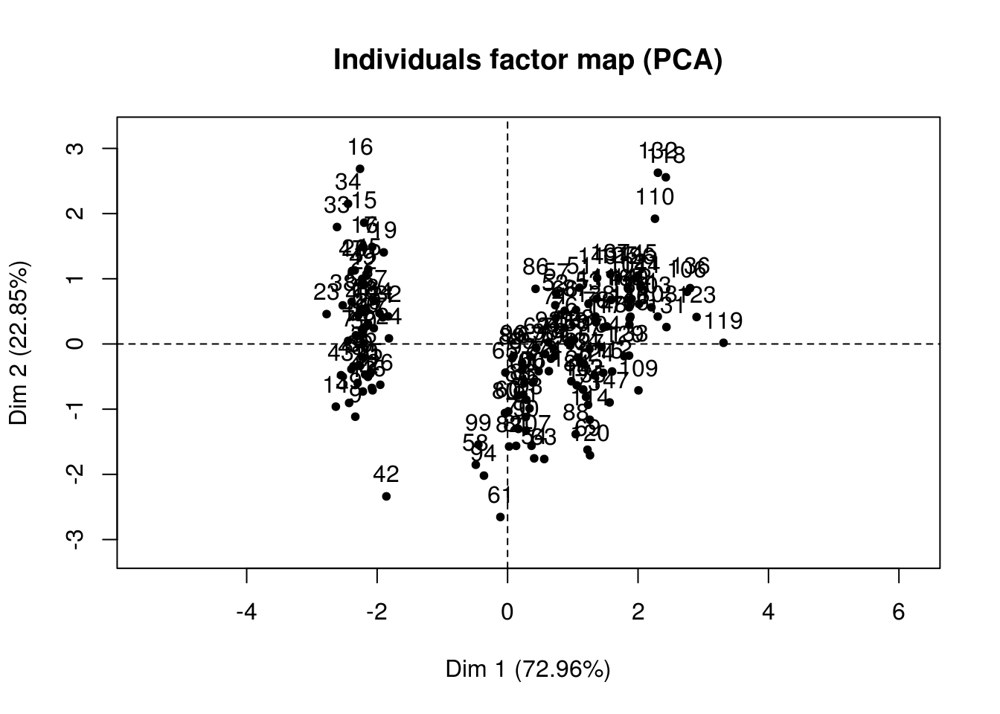
Individus atypiques
Repérés sur les axes factoriels par des contributions très élevées par rapport à celles des autres individus.
Individus ayant tendance à écraser les autres de part ces contributions extrêmes.
- Que faire ?
- repérer les individus atypiques, i.e. ceux ayant des contributions trop importantes par rapport à celles des autres.
- si le nombre d’individus atypiques représente un faible pourcentage de l’échantillon, revenir vers les collecteurs des données, ou simplement les éliminer de l’étude.
- si ce nombre est élevé, les traiter comme un groupe à part entière.
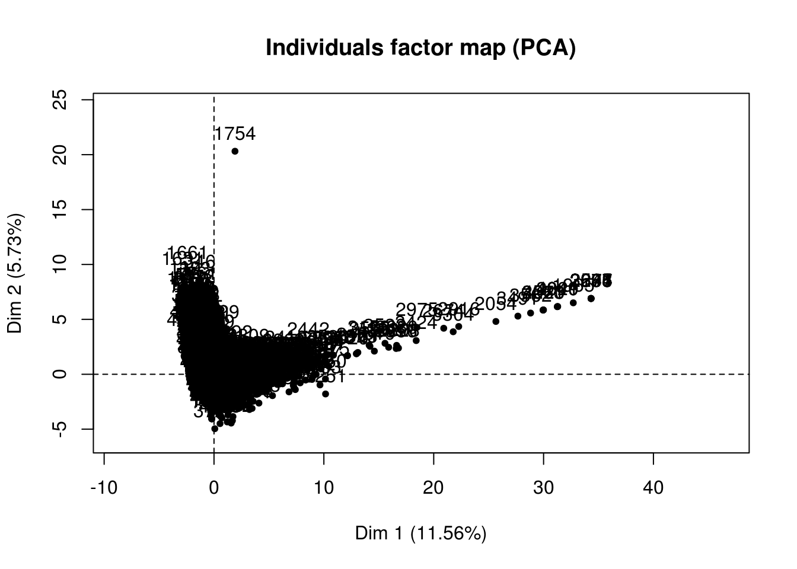
Interprétation des axes factoriels : point de vue des variables
Variables regardées comme des points de \(\mathbb{R}^n\).
\(d(j,j')\), distance dans \(\mathbb{R}^n\) entre les variables \(X^{(j)}\) et \(X^{(j')}\).
On diagonalise \(\Sigma^t\), transposée de la matrice des corrélations des variables \((X^{(1)}, \ldots, X^{(p)})\).
- On obtient les propriétés suivantes :
- la norme des vecteurs variables dans \(\mathbb{R}^n\) est égale à 1,
- \(d^2(j,j') = 2\left(1-\mbox{Cor}(X^{(j)},X^{(j')})\right)\),
- \(\mbox{Cor}(X^{(j)},X^{(j')}) = \mbox{cos}(X^{(j)},X^{(j')})\),
- les variables sont décrites sur la sphère unité de \(\mathbb{R}^p\subset \mathbb{R}^n\) par leurs contributions sur les facteurs-individus.
- Ce qui implique :
- les vecteurs variables sont tous sur la sphère unité de \(\mathbb{R}^p\),
- plus les variables sont corrélées, et plus leurs vecteurs variables sont colinéaires,
- moins les variables sont corrélées et plus les vecteurs variables sont orthogonaux.
Sphère et cercles des corrélations (LPM)
plot(iris.pca, choix="var")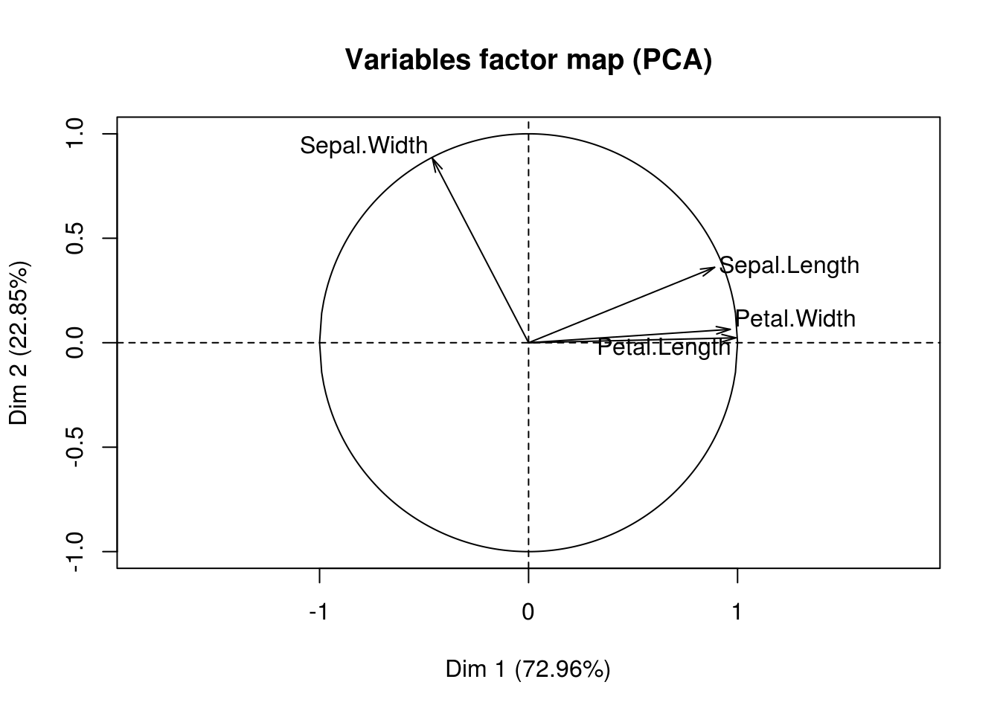
Contributions et qualité de représentation des variables
Contribution de la variable \(j\) à l’axe \(k\) : \[100\frac{\left(\mbox{Cor}(F^{(k)},X^{(j)})\right)^2}{\lambda_k}\] Plus sa valeur est élevée, et plus la variable contribue à la construction de l’axe.
De plus, on a : \[\mbox{cos}(F^{(k)},X^{(j)}) = \mbox{Cor}(F^{(k)},X^{(j)}).\]
\(\Longrightarrow\) contribution de la variable \(j\) à l’axe \(k\) interprétée en terme de proximité de la variable à l’axe en question.
Attention : si la contribution d’une variable est faible, cela signifie qu’elle contribue à d’autres axes.
Une variable est bien représentée sur le cercle des corrélations si son vecteur est proche du cercle. Seules les variables bien représentées interviennent dans l’interprétation des axes.
Représentation simultanée
Interprétation du cercle de corrélations, et analyse conjointe des deux nuages (individus et variables)
par(mfrow=c(1,2))
plot(iris.pca, choix = "ind")
plot(iris.pca, choix = "var")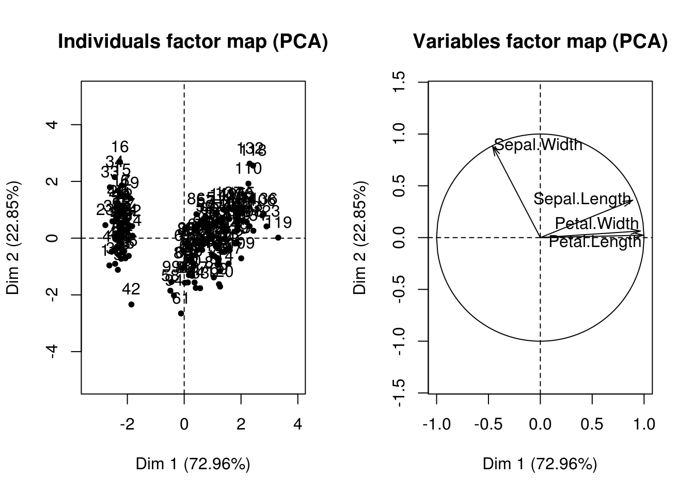
Covariance ou Corrélation ?
- Corrélation
- revient à centrer et réduires les variables,
- les variables sont sans dimension,
- les variables ont toutes la même dispersion.
- \(\Longrightarrow\) choix par défaut.
- Covariance
- revient à simplement centrer les variables,
- les variables sont directement analysées,
- les variables ont des dispersions différentes.
- \(\Longrightarrow\) à n’utiliser que si les données sont homogènes.
Réduction de dimension : Choix du nombre de facteurs
Pas de “recette” universelle pour choisir le nombre de facteurs à retenir.
- Choix dépendant de l’analyse :
- Garder un petit nombre de facteurs concentrant l’essentiel de la variabilité pour représenter les données.
- Préparer les données pour une éventuelle analyse ultérieure. Dans ce cas, on peut aller un peu plus loin dans le nombre de facteurs à conserver.
Choix du nombre de facteurs : Règle de Kaiser
- Garder les axes correspondant aux valeurs propres supérieures à la moyenne des valeurs propres, soit
- supérieures à \(I_{tot}/p\) dans le cas de la matrice des variances/covariances,
- supérieures à \(1\) dans le cas de la matrice des corrélations.
- On peut également garder un peu plus de facteurs expliquant un pourcentage de variance cumulé satisfaisant.
Choix du nombre de facteurs : Ebouli des valeurs propres
Garder les axes correspondant aux valeurs propres situées avant une chute brutale sur les valeurs des valeurs propres de \(\Sigma\). Les axes correspondants aux valeurs suivantes expliquent peu de la variabilité du nuage.
par(mfrow=c(1,2))
plot(iris.pca$eig$eigenvalue, type = 'b',
main="Ebouli des valeurs propres")
barplot(iris.pca$eig$eigenvalue,
main="Ebouli des valeurs propres",
names.arg=1:nrow(iris.pca$eig))Choix du nombre de facteurs : Représentation simultanée
par(mfrow=c(1,2))
plot(iris.pca$eig$eigenvalue, type = 'b',
main="Ebouli des valeurs propres")
abline(h=1)
barplot(iris.pca$eig$eigenvalue,
main="Ebouli des valeurs propres",
names.arg=1:nrow(iris.pca$eig))
abline(h=1)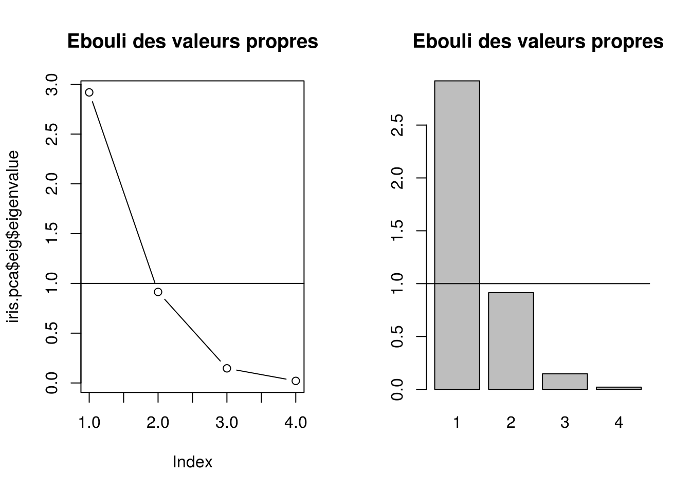
Visualisation des espèces sur le premier plan factoriel
par(mfrow=c(1,2))
plot(iris.pca, choix = "ind", habillage = "ind",
col.hab=rainbow(3)[iris$Species])
legend("top", legend = levels(iris$Species),
col = rainbow(3), pch = 19, cex = 0.75,
ncol = 3)
plot(iris.pca, choix = "var")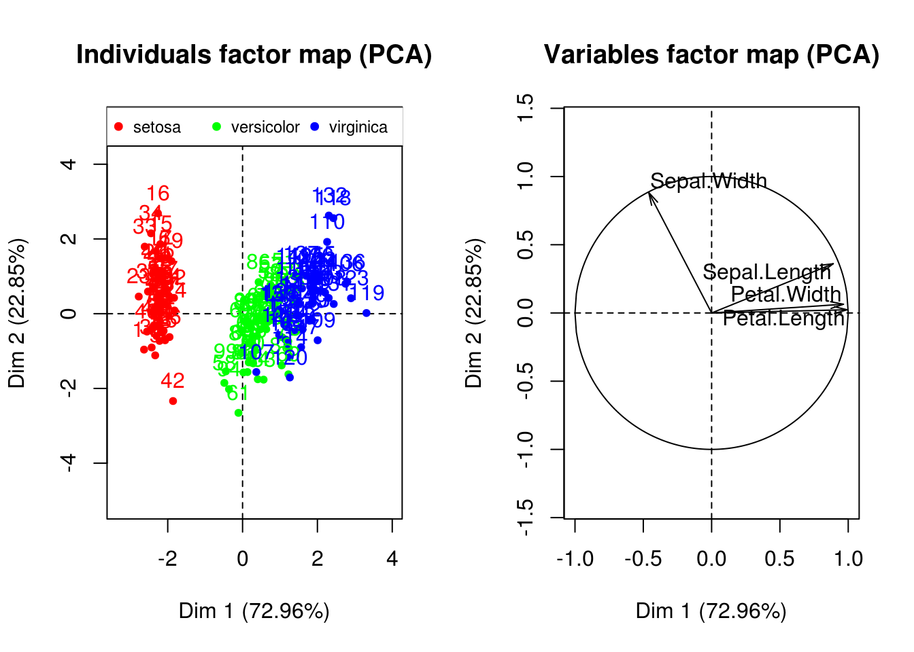
TP : les données décathlon
- Etude des performances des athlètes dans les différentes disciplines lors de deux épreuves de décathlon en 2004.
- Charger les données dans R
data(decathlon)- Effectuer l’ACP sur les variables d’intérêt. Marquer les autres variables comme illustratives (options quanti.sup et quali.sup dans la fonction PCA)
- Sélectionner le nombre de facteurs à conserver pour la visualisation.
- Visualiser et décrire les données sur les plans factoriels sélectionnés.
Analyse factorielle des Correspondances Simples (AFC)
- Données
- Tableau de contingence entre 2 variables qualitatives
- Plus généralement tableau de nombres non-négatifs
- Problème
- Visualiser les correspondances entre les modalités d’une même variable,
- Représentation simultanée des modalités des 2 variables pour analyser les liens entre les 2 variables.
- Outil
- ACP directement sur la table de contingence impossible (distance entre modalités non-définie),
- distance entre modalités définie par la distance du \(\chi^2\) entre profils lignes (ou colonnes) : 2 profils similaires seront à distance nulle.
- ACP sur les profils lignes (ou colonnes), centrée sur la distribution marginale correspondante, en remplaçant la distance classique par la distance du \(\chi^2\).
Notations et définitions
- \(X=(f_{i,j})\) tableau de contingence à \(1\leqslant i\leqslant n\) modalités lignes et \(1\leqslant j\leqslant p\) modalités colonnes.
- Profils-lignes \((f_{j|i})_{1\leqslant j\leqslant p}\), \(i=1,\ldots,n\) (resp. profils-colonnes \((f_{i|j})_{1\leqslant i\leqslant n}\), \(j=1,\ldots,p\)) = tableau des fréquences conditionnelles aux modalités de la variable ligne (resp. colonne).
- Profil moyen : profil \(f_I = (f_{\bullet j})_{1\leq j \leq p}\) (resp. \(f_J=(f_{i\bullet})_{1\leq i \leq n}\)) de la distribution marginale en colonnes (resp. en lignes).
- Distance du \(\chi^2\) entre les modalités lignes \(i\) et \(i'\) (resp. colonnes \(j\) et \(j'\)) : \[d^2(x_i,x_{i'}) = \sum_{j=1}^p \frac{1}{f_{\bullet j}}\left(\frac{f_{i,j}}{f_{i\bullet}}-\frac{f_{i',j}}{f_{i'\bullet}}\right)^2\] \[d^2(y_j,y_{j'}) = \sum_{i=1}^n \frac{1}{f_{i\bullet}}\left(\frac{f_{i,j}}{f_{\bullet j}}-\frac{f_{i,j'}}{f_{\bullet j'}}\right)^2\]
Enquête sur les femmes et le travail en 1974
Pour 1724 femmes interrogées, tableau croisant l’image de la famille idéale et l’activité convenant le mieux à une femme dont les enfants vont à l’école. (données)
femmes = read.csv2(file="donnees/femme_travail.csv",
header=TRUE, row.names=1, sep=",")
x = femmes[,1:3]
x rester.au.foyer trav..mi.temps trav..plein.temps
2 conj. tr. Egalement 13 142 106
trav. mari + absorbant 30 408 117
seul le mari trav. 241 573 94Test du \(\chi^2\) d’indépendance entre les 2 variables “image idéale” et “activité idéale” :
chisq.test(x)
Pearson's Chi-squared test
data: x
X-squared = 233.43, df = 4, p-value < 2.2e-16On rejette l’hypothèse d’indépendance \(\Longrightarrow\) d’autant plus naturel de visualiser les relations entre les différentes modalités.
AFC - Profils lignes
pl = rbind(x, apply(x, 2, sum))
rownames(pl)[4] = "Profil moyen"
round(100*prop.table(as.matrix(pl),margin=1),2) rester.au.foyer trav..mi.temps trav..plein.temps
2 conj. tr. Egalement 4.98 54.41 40.61
trav. mari + absorbant 5.41 73.51 21.08
seul le mari trav. 26.54 63.11 10.35
Profil moyen 16.47 65.14 18.39AFC - Profils colonnes
pc = cbind(x,apply(x,1,sum))
colnames(pc)[4] = "Profil moyen"
round(100*prop.table(as.matrix(pc),margin=2),2) rester.au.foyer trav..mi.temps trav..plein.temps
2 conj. tr. Egalement 4.58 12.64 33.44
trav. mari + absorbant 10.56 36.33 36.91
seul le mari trav. 84.86 51.02 29.65
Profil moyen
2 conj. tr. Egalement 15.14
trav. mari + absorbant 32.19
seul le mari trav. 52.67Principe général (\(n>p\))1
- Transformation du tableau de contingence afin de récupérer les profils lignes et colonnes.
- ACP sur le tableau des profils lignes avec la distance du \(\chi^2\) :
- Maximisation sur chaque axe de la distance de chaque modalité de la variable ligne au profil ligne moyen \(f_I\).
- Association de chaque modalité ligne \(i\) à un point \(M_i\) barycentre des \(p\) facteurs pondéré par les fréquences conditionnelles \((f_{i,j}/f_{\bullet j})_{1\leq j\leq p}\).
- Représentation des modalités lignes dans les plans factoriels centrés sur le profil moyen \(f_I\).
- Choix des axes pour l’analyse des correspondances de la même manière que pour l’ACP.
Propriétés mathématiques
La matrice \(p\times p\) diagonalisée dans l’ACP avec la distance du \(\chi^2\) admet \(p-1\) valeurs propres réelles positives \(\lambda_1 \geqslant \ldots \geqslant \lambda_{p-1}\) différentes de \(1\) et, pour tout \(j=1,\dots,p-1\), \(0\leq \lambda_j\leq 1\).
L’inertie totale \(I_{tot}\) du nuage des points modalités \(M_i\) est proportionnelle à la statistique \(T\) du test du \(\chi^2\) d’indépendance : soit \(N\) le nombre d’individus, \[I_{tot} = \sum_{i=1}^n f_{i.}d^2(x_i,f_I) = \sum_{j=1}^pf_{.j}d^2(y_j,f_J)=\frac{T}{N}\]
Relation quasi-barycentrique : les \(p\) modalités colonnes peuvent être représentées sur les mêmes axes factoriels que les \(n\) modalités lignes.
AFC sur les données du travail des femmes en 1974
x.afc = CA(x)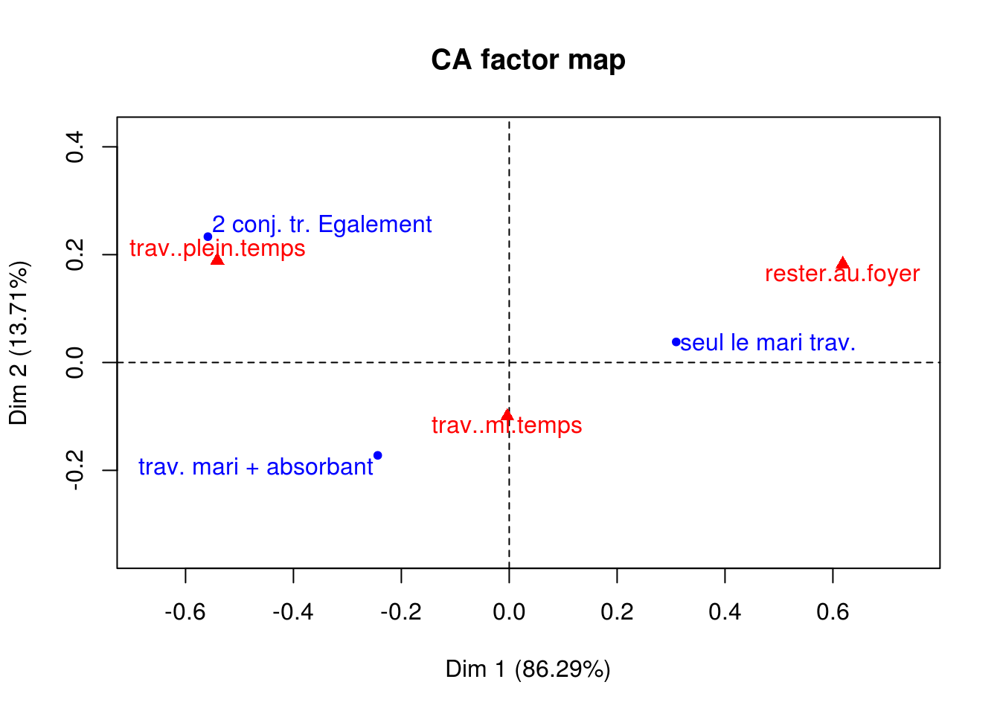
Interprétation et visualisation
x.afc$row$coord Dim 1 Dim 2
2 conj. tr. Egalement -0.5586051 0.23338696
trav. mari + absorbant -0.2437595 -0.17220664
seul le mari trav. 0.3095622 0.03817256Coordonnées des modalités lignes (=barycentre pondéré) sur les axes factoriels.
x.afc$row$contrib Dim 1 Dim 2
2 conj. tr. Egalement 40.43165 44.429144
trav. mari + absorbant 16.37145 51.435978
seul le mari trav. 43.19691 4.134878- Contribution des modalités lignes aux axes factoriels : axe expliqué par les modalités dont la contribution est \(\geqslant 100/n (= 33\%)\).
- Axe 1 construit sur les modalités opposées “les 2 conjoints travaillent également” et “seul le mari travaille”.
- Axe 2 construit sur les modalités opposées “les 2 conjoints travaillent également” et “le travail du mari est plus absorbant”.
x.afc$row$cos2 Dim 1 Dim 2
2 conj. tr. Egalement 0.8513830 0.14861696
trav. mari + absorbant 0.6670724 0.33292758
seul le mari trav. 0.9850220 0.01497797- Qualité de représentation des modalités lignes sur les axes factoriels : une modalité est bien représentée si son cosinus carré est proche de 1.
- Modalités “les 2 conjoints travaillent également” et “seul le mari travaille” bien représentées sur l’axe 1.
- Modalité “le travail du mari est plus absorbant” mal représentée sur les 2 axes.
x.afc$col$coord Dim 1 Dim 2
rester.au.foyer 0.618376453 0.1826620
trav..mi.temps -0.003638471 -0.0996542
trav..plein.temps -0.541113279 0.1893869x.afc$col$contrib Dim 1 Dim 2
rester.au.foyer 53.913227013 29.61346
trav..mi.temps 0.007380551 34.85341
trav..plein.temps 46.079392436 35.53314Axes expliqués par les modalités colonnes dont la contribution est \(\geqslant 100/p (= 33\%)\).
x.afc$col$cos2 Dim 1 Dim 2
rester.au.foyer 0.919747391 0.08025261
trav..mi.temps 0.001331276 0.99866872
trav..plein.temps 0.890871382 0.10912862- Modalités “rester au foyer” et “travail à plein temps” bien représentées sur l’axe 1.
- Modalité “travail à mi-temps” bien représentée sur l’axe 2.
Résumé
- Analyse simultanée
- des contributions,
- des cosinus carrés.
- Une modalité ligne (resp. colonne) n’intervient dans l’interprétation d’un axe factoriel que si
- sa contribution à la construction de l’axe est \(\geqslant 1/n\) (resp. \(\geqslant 1/p\)),
- ET elle est bien représentée sur l’axe, i. e. son cosinus carré est proche de 1.
- Si deux modalités bien représentées sur un plan factoriel sont proches, leurs distributions sont comparables \(\Longrightarrow\) les individus prenant ces modalités se comportent de manière comparable.
Modalités atypiques
Modalités ayant de fortes contributions, éloignées du centre, mais relativement mal représentées sur les axes factoriels.
Effet souvent dû à la distance du \(\chi^2\), qui a tendance à sur-représenter les modalités de faible effectif.
- Que faire ?
- les éliminer de l’analyse (les traiter comme modalités illustratives),
- uniquement si ce sont des modalités de faible effectif (apurement),
- les regrouper avec des modalités comparables,
- les ventiler sur les autres modalités : attribuer de manière aléatoire une autre modalité aux individus concernés.
Interprétation géométrique (LPM)
AFC - Effet Guttman (LPM)
Si les \(p-1\) valeurs propres différentes de 1 ont toutes une valeur proche de 1, on parle d’effet Guttman.
Chaque modalité ligne correspond alors exactement à une modalité colonne.
Analyse Factorielle des Correspondances Multiples (ACM)
- Données
- Tableau \(X\) de \(n\) individus et \(s>2\) variables qualitatives.
- Correspond à la donnée de plusieurs tableaux de contingences observés sur les mêmes individus.
- Problème
- Etablir les correspondances entre les modalités d’une même variable.
- Visualiser les liens entre plusieurs variables à l’aide d’une représentation simultanée.
- Outils
- Utilisation du tableau disjonctif complet ou de la table de Burt.
- Pour \(s=2\), effectuer une AFC sur la table de contingence ou sur le tableau disjonctif complet correspondant sont équivalents.
- Généralisation de l’AFC à \(s>2\) variables qualitatives.
Enquête sur les consommateurs de thé
Enquête effectuée sur 300 consommateurs de thé concernant leurs habitudes de consommation. (données)
the = read.csv2("donnees/the.csv",header=TRUE)
x = the[,-c(22,19:21, 23:36)]
summary(x) ptt.dej gouter soiree apres.dejeuner
Pas.ptt dej:156 gouter :169 Pas.soiree:197 apres dej : 44
ptt dej :144 Pas.gouter:131 soiree :103 Pas.apres dej:256
apres.diner tt.moment maison
apres diner : 21 Pas.tt moment:197 maison :291
Pas.apres diner:279 tt moment :103 Pas.maison: 9
travail salon.de.t amis resto
Pas.travail:213 Pas.salon de t:242 amis :196 Pas.resto:221
travail : 87 salon de t : 58 Pas.amis:104 resto : 79
bar variete comment sucre
bar : 63 noir : 74 autre : 9 Pas.sucre:155
Pas.bar:237 parfume:193 citron: 33 sucre :145
vert : 33 lait : 63
pur :195
forme lieuachat type
sachet :170 GMS :192 t_bas_de_gamme : 7
sachet+vrac: 94 GMS+mag.spe. : 78 t_haut_de_gamme: 53
vrac : 36 magasin specialise: 30 t_inconnu : 12
t_marque_connue: 95
t_MDD : 21
t_variable :112 Apurement
- Apurement : réponse au problème des modalités de faible effectif pouvant perturber l’analyse
- petit nuage de points très concentré et très éloigné des autres,
- petit effectif ayant un grand poids dans l’analyse,
- peuvent rendre instables les axes factoriels.
L’apurement rend l’analyse plus robuste.
Modalités dont l’effectif est insuffisant ventilées aléatoirement dans les autres modalités : individus concernés répartis aléatoirement dans les autres modalités.
Modalités ventilées gardées comme modalités illustratives dans l’analyse.
Par défaut, une modalité est ventilée si son effectif est inférieur à 2% de l’effectif total.
Caractéristiques
- Nombre maximal de facteurs principaux = nombre total de modalités non-ventilées - nombre de variables = \(p'-s\).
- Somme des valeurs propres : \[\sum_{j=1}^{p'-1}\lambda_j = \frac{p'-s}{s}.\]
- Premiers axes expliquent une faible part de l’inertie.
- Décroissance des valeurs propres moins forte que dans l’ACP ou l’AFC.
- \(\Longrightarrow\) Nombre d’axes à retenir pour une analyse ultérieure plus important que pour l’ACP ou l’AFC.
- Règle de Kaiser : moyenne des valeurs propres = \[\frac{1}{p'-1}\sum_{j=1}^{p'-1}\lambda_j = \frac{p'-s}{s\times(p'-1)}.\]
Représentation simultanée
- Relation quasi-barycentrique : comme pour l’AFC, \(n\) individus et \(p\) modalités représentés dans les mêmes plans factoriels.
- De même que pour l’AFC, contributions et cosinus carrés des modalités permettent d’expliquer les axes factoriels.
- L’interprétation du nuage de points-individus est similaire à l’ACP.
- Variables représentées dans le plan factoriel par les centres de gravité des modalités correspondantes.
- Visualisation : on se restreint à maximum 4 plans factoriels.
ACM sur les données de thé
Nombre maximal de facteurs = \(13\times 2+3\times 3+4+6\)-18 = 27
x.acm = MCA(x, ncp=27, graph=FALSE)
plot(x.acm, invisible="var")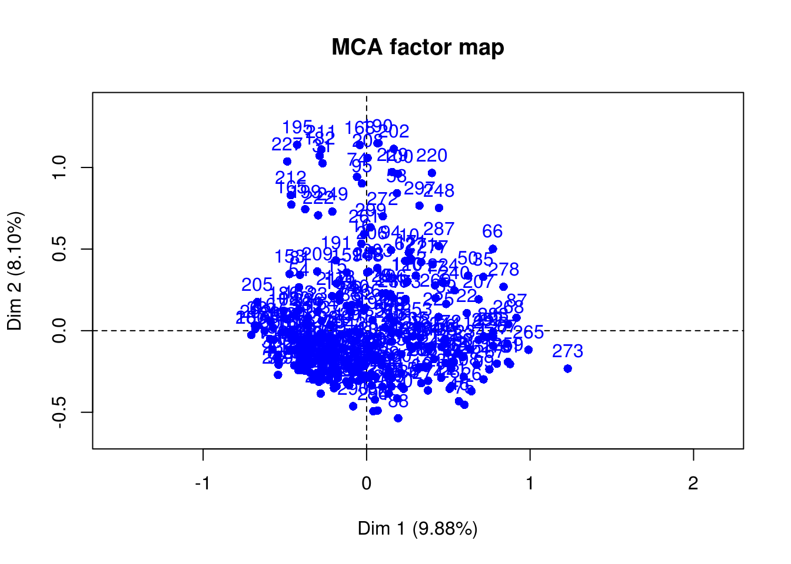
Les modalités
plot(x.acm, invisible="ind")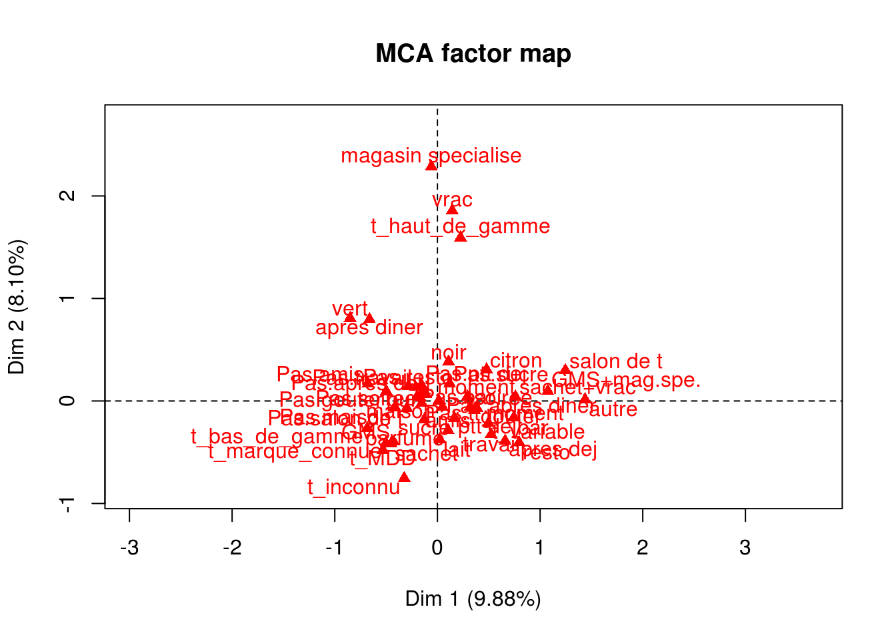
Les variables
plot(x.acm, choix="var")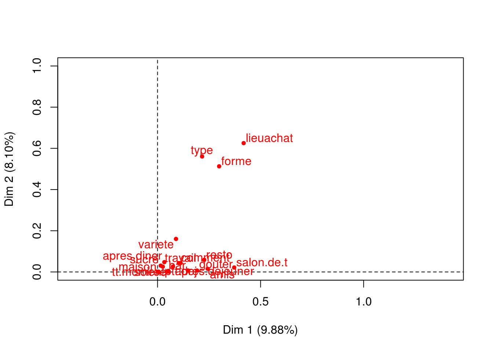
Valeurs propres et inertie expliquée
x.acm$eig eigenvalue percentage of variance cumulative percentage of variance
dim 1 0.14827441 9.884961 9.884961
dim 2 0.12154673 8.103115 17.988076
dim 3 0.09000954 6.000636 23.988712
dim 4 0.07805440 5.203627 29.192339
dim 5 0.07374870 4.916580 34.108919
dim 6 0.07138044 4.758696 38.867615
dim 7 0.06782906 4.521937 43.389552
dim 8 0.06532655 4.355103 47.744656
dim 9 0.06184167 4.122778 51.867433
dim 10 0.05852817 3.901878 55.769311
dim 11 0.05707772 3.805181 59.574493
dim 12 0.05441920 3.627946 63.202439
dim 13 0.05192969 3.461979 66.664418
dim 14 0.04874462 3.249641 69.914060
dim 15 0.04831065 3.220710 73.134770
dim 16 0.04690465 3.126977 76.261747
dim 17 0.04554779 3.036519 79.298266
dim 18 0.04024922 2.683281 81.981547
dim 19 0.03812120 2.541414 84.522961
dim 20 0.03657138 2.438092 86.961053
dim 21 0.03566464 2.377643 89.338696
dim 22 0.03484898 2.323266 91.661961
dim 23 0.03082882 2.055255 93.717216
dim 24 0.02873151 1.915434 95.632650
dim 25 0.02732068 1.821378 97.454028
dim 26 0.02110048 1.406699 98.860727
dim 27 0.01708910 1.139273 100.000000Ebouli des valeurs propres et règle de Kaiser
lambdabar = mean(x.acm$eig$eigenvalue)
par(mfrow=c(1,2))
plot(x.acm$eig$eigenvalue, type = 'b',
main="Ebouli des valeurs propres")
abline(h=lambdabar)
barplot(x.acm$eig$eigenvalue,
main="Ebouli des valeurs propres",
names.arg=1:nrow(x.acm$eig))
abline(h=lambdabar)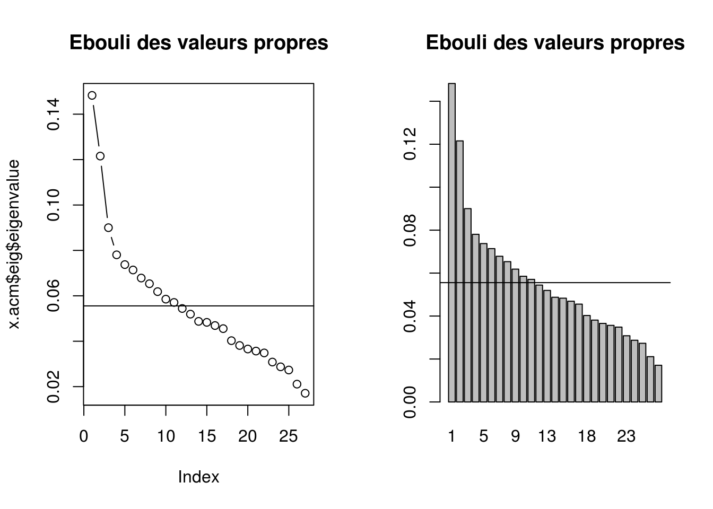
\(\Longrightarrow\) 13 facteurs à retenir.
Contributions des modalités aux axes factoriels (sommer par variable)
round(x.acm$var$contrib, digits=2) Dim 1 Dim 2 Dim 3 Dim 4 Dim 5 Dim 6 Dim 7 Dim 8 Dim 9
Pas.ptt dej 0.46 0.56 6.37 2.83 0.49 1.91 1.42 0.18 0.48
ptt dej 0.49 0.61 6.90 3.07 0.53 2.07 1.54 0.20 0.52
gouter 3.14 0.14 1.46 1.83 0.43 0.35 3.02 0.68 0.46
Pas.gouter 4.05 0.17 1.89 2.36 0.56 0.45 3.89 0.88 0.59
Pas.soiree 0.68 0.03 2.25 0.46 0.01 9.08 0.27 0.20 0.47
soiree 1.31 0.05 4.31 0.88 0.01 17.37 0.51 0.37 0.90
apres dej 2.38 1.02 0.82 2.95 11.12 3.90 1.76 4.54 5.49
Pas.apres dej 0.41 0.17 0.14 0.51 1.91 0.67 0.30 0.78 0.94
apres diner 1.15 2.03 1.24 19.54 3.22 1.31 1.82 3.29 1.92
Pas.apres diner 0.09 0.15 0.09 1.47 0.24 0.10 0.14 0.25 0.14
Pas.tt moment 0.58 0.01 2.15 1.21 0.24 2.37 0.65 8.00 0.35
tt moment 1.10 0.03 4.11 2.31 0.47 4.53 1.25 15.30 0.67
maison 0.01 0.00 0.25 0.01 0.02 0.02 0.20 0.68 0.00
Pas.maison 0.19 0.01 8.05 0.23 0.69 0.77 6.53 21.85 0.05
Pas.travail 1.21 0.57 0.09 1.33 0.19 3.84 2.52 0.52 0.57
travail 2.97 1.41 0.22 3.26 0.45 9.39 6.17 1.28 1.39
Pas.salon de t 2.69 0.19 0.09 0.04 0.20 0.01 0.75 0.02 0.02
salon de t 11.24 0.80 0.40 0.16 0.84 0.04 3.11 0.10 0.08
amis 3.16 0.24 2.20 0.02 0.28 0.34 0.02 0.47 0.07
Pas.amis 5.95 0.46 4.15 0.03 0.52 0.64 0.03 0.88 0.14
Pas.resto 2.23 0.71 0.03 0.11 2.84 1.87 0.10 0.10 0.75
resto 6.25 1.98 0.09 0.31 7.95 5.24 0.28 0.28 2.10
bar 4.36 0.25 2.10 0.04 1.68 0.94 0.14 5.59 10.56
Pas.bar 1.16 0.07 0.56 0.01 0.45 0.25 0.04 1.48 2.81
noir 0.11 1.66 14.55 0.48 4.16 7.11 0.07 0.13 0.76
parfume 0.26 2.39 5.90 0.01 0.01 1.69 0.14 0.13 0.36
vert 2.98 3.28 0.03 1.76 8.00 0.73 0.26 1.93 7.61
autre 2.32 0.00 3.72 12.52 14.22 0.04 0.33 0.11 0.76
citron 0.94 0.47 3.07 1.20 0.02 3.72 7.04 4.01 11.97
lait 0.00 1.35 4.50 6.56 1.46 1.33 8.13 0.08 18.07
pur 0.58 0.14 0.81 1.31 2.44 1.97 6.70 1.11 0.65
Pas.sucre 0.28 0.68 6.27 0.23 1.24 0.49 5.33 2.33 0.27
sucre 0.30 0.73 6.71 0.25 1.32 0.52 5.70 2.49 0.29
sachet 4.32 4.49 0.00 0.28 1.98 0.02 0.26 0.12 0.36
sachet+vrac 6.79 0.03 0.22 5.64 5.00 0.62 1.28 0.07 1.72
vrac 0.09 18.92 0.78 7.21 0.31 2.42 0.52 0.11 0.67
GMS 4.38 4.59 0.00 0.26 0.06 1.45 2.21 0.06 0.00
GMS+mag.spe. 11.26 0.11 0.80 3.82 0.34 2.05 4.53 0.02 0.14
magasin specialise 0.01 23.89 1.77 3.43 0.12 0.54 0.11 0.15 0.60
t_bas_de_gamme 0.41 0.08 0.39 1.54 0.01 5.43 10.47 0.51 13.63
t_haut_de_gamme 0.34 20.51 0.02 0.68 1.49 0.17 0.03 0.12 0.56
t_inconnu 0.16 1.04 0.04 1.80 17.31 0.09 2.87 1.80 9.61
t_marque_connue 3.00 2.46 0.15 0.02 0.01 0.01 1.85 2.37 0.01
t_MDD 0.74 0.73 0.31 2.49 0.06 2.05 5.19 14.42 0.41
t_variable 3.45 0.81 0.00 3.55 5.11 0.09 0.57 0.02 0.05
Dim 10 Dim 11 Dim 12 Dim 13 Dim 14 Dim 15 Dim 16 Dim 17
Pas.ptt dej 0.94 2.67 1.12 5.86 0.23 0.00 1.85 0.03
ptt dej 1.02 2.90 1.21 6.35 0.25 0.00 2.00 0.03
gouter 7.21 0.26 0.01 0.14 0.04 2.34 2.45 1.23
Pas.gouter 9.30 0.34 0.01 0.18 0.05 3.02 3.16 1.59
Pas.soiree 0.13 1.32 0.08 0.55 0.88 0.08 4.37 0.73
soiree 0.24 2.52 0.15 1.05 1.68 0.14 8.35 1.40
apres dej 0.10 0.00 0.90 2.42 6.58 12.07 1.69 0.16
Pas.apres dej 0.02 0.00 0.16 0.42 1.13 2.07 0.29 0.03
apres diner 2.47 1.15 0.51 0.03 10.19 3.71 15.57 0.62
Pas.apres diner 0.19 0.09 0.04 0.00 0.77 0.28 1.17 0.05
Pas.tt moment 3.75 2.69 0.02 0.42 0.18 0.85 0.01 0.44
tt moment 7.17 5.15 0.04 0.81 0.34 1.63 0.01 0.84
maison 0.39 0.08 0.11 0.05 0.07 0.03 0.19 0.21
Pas.maison 12.70 2.67 3.53 1.58 2.22 1.11 6.24 6.85
Pas.travail 0.00 0.16 0.22 2.26 1.16 0.72 0.94 0.33
travail 0.01 0.40 0.55 5.54 2.85 1.76 2.30 0.80
Pas.salon de t 0.01 0.82 0.04 0.26 0.07 3.43 0.04 0.67
salon de t 0.02 3.42 0.17 1.09 0.29 14.31 0.17 2.80
amis 3.61 0.13 0.08 1.37 3.14 1.19 0.66 0.64
Pas.amis 6.81 0.25 0.15 2.58 5.92 2.24 1.25 1.21
Pas.resto 0.08 0.04 0.15 0.18 0.08 2.03 0.11 1.42
resto 0.22 0.10 0.43 0.50 0.22 5.67 0.31 3.97
bar 0.00 1.52 1.54 14.46 0.12 4.78 0.00 10.69
Pas.bar 0.00 0.40 0.41 3.84 0.03 1.27 0.00 2.84
noir 0.03 1.27 0.03 1.04 0.91 5.10 0.48 5.56
parfume 0.27 3.84 0.00 0.04 0.13 1.38 1.82 0.04
vert 2.24 9.30 0.05 4.15 0.32 0.30 4.99 16.22
autre 0.04 4.88 6.51 3.30 9.88 0.02 2.08 2.41
citron 14.32 1.22 0.15 2.28 2.89 6.91 11.29 0.03
lait 0.69 0.69 1.58 0.01 0.03 2.02 0.06 1.24
pur 1.08 1.96 2.02 0.03 0.01 0.06 3.37 0.05
Pas.sucre 0.14 3.19 0.59 4.03 0.39 4.95 1.67 0.83
sucre 0.15 3.41 0.63 4.31 0.42 5.29 1.79 0.88
sachet 0.78 0.02 0.00 0.39 2.72 0.06 1.10 0.30
sachet+vrac 0.69 0.70 0.25 2.37 6.45 1.30 3.34 1.81
vrac 0.33 1.03 0.47 1.27 0.27 1.76 0.45 0.97
GMS 0.00 0.16 0.01 0.17 0.44 0.13 0.00 0.00
GMS+mag.spe. 0.49 0.10 0.00 1.76 6.69 0.63 0.00 0.01
magasin specialise 1.17 2.32 0.06 1.22 6.24 0.14 0.01 0.05
t_bas_de_gamme 6.92 2.29 0.09 17.53 15.56 0.58 1.29 18.36
t_haut_de_gamme 0.64 0.03 0.63 0.35 1.79 0.62 3.21 0.06
t_inconnu 3.40 8.49 17.54 0.96 1.08 1.05 2.76 1.58
t_marque_connue 6.90 0.17 30.25 0.00 2.54 0.19 1.14 1.73
t_MDD 0.00 21.98 23.18 0.99 0.06 1.79 0.68 0.00
t_variable 3.36 3.86 4.33 1.88 2.69 0.99 5.34 8.29
Dim 18 Dim 19 Dim 20 Dim 21 Dim 22 Dim 23 Dim 24 Dim 25
Pas.ptt dej 10.74 0.06 1.30 5.68 0.62 0.00 0.02 0.21
ptt dej 11.63 0.07 1.40 6.15 0.68 0.00 0.02 0.23
gouter 2.51 5.24 0.74 0.27 1.08 3.83 1.10 0.20
Pas.gouter 3.24 6.75 0.96 0.34 1.40 4.94 1.42 0.26
Pas.soiree 4.59 0.55 4.25 0.01 0.03 0.18 2.74 0.15
soiree 8.77 1.05 8.12 0.02 0.06 0.34 5.24 0.28
apres dej 4.58 7.99 0.39 0.05 0.10 8.61 4.29 1.28
Pas.apres dej 0.79 1.37 0.07 0.01 0.02 1.48 0.74 0.22
apres diner 0.37 2.56 1.02 3.84 2.38 0.00 1.12 0.21
Pas.apres diner 0.03 0.19 0.08 0.29 0.18 0.00 0.08 0.02
Pas.tt moment 0.11 1.56 0.14 1.58 0.10 1.47 0.03 0.27
tt moment 0.22 2.98 0.27 3.02 0.20 2.82 0.06 0.51
maison 0.03 0.01 0.01 0.22 0.15 0.01 0.18 0.00
Pas.maison 1.06 0.37 0.21 7.18 4.76 0.26 5.77 0.04
Pas.travail 2.82 0.53 0.07 5.17 1.32 1.03 0.07 0.59
travail 6.91 1.31 0.17 12.65 3.24 2.51 0.17 1.45
Pas.salon de t 0.13 0.39 1.50 0.88 0.04 0.26 5.72 0.65
salon de t 0.54 1.64 6.28 3.65 0.17 1.08 23.89 2.72
amis 0.00 0.76 6.77 5.37 0.00 0.70 0.97 2.13
Pas.amis 0.01 1.43 12.76 10.13 0.00 1.32 1.83 4.01
Pas.resto 0.00 0.87 1.46 0.87 2.96 4.59 0.89 1.44
resto 0.01 2.43 4.08 2.45 8.27 12.85 2.48 4.02
bar 3.29 1.17 0.00 0.00 7.20 3.25 2.26 0.20
Pas.bar 0.88 0.31 0.00 0.00 1.91 0.86 0.60 0.05
noir 0.24 0.11 1.40 1.97 21.26 0.53 3.30 1.00
parfume 0.93 0.03 0.58 0.00 10.74 0.21 0.58 2.86
vert 9.41 0.00 0.01 4.01 1.05 0.00 0.76 6.70
autre 1.33 12.63 0.01 2.21 0.79 0.47 10.96 3.91
citron 5.15 0.03 5.21 0.53 0.19 2.85 1.11 0.29
lait 8.99 10.03 1.39 0.37 1.91 0.90 5.84 0.19
pur 0.27 1.21 2.66 0.11 0.17 1.18 2.73 0.79
Pas.sucre 0.14 2.30 2.78 1.73 3.22 0.20 2.81 2.16
sucre 0.15 2.46 2.97 1.85 3.44 0.22 3.01 2.31
sachet 0.38 0.01 7.60 0.51 1.21 1.02 0.04 8.44
sachet+vrac 0.94 2.81 5.37 0.34 2.91 3.59 0.05 5.77
vrac 0.05 6.36 5.04 6.18 0.13 0.75 0.00 5.92
GMS 0.44 0.11 0.07 1.33 0.48 1.75 1.00 0.00
GMS+mag.spe. 1.50 0.55 0.00 3.28 1.69 12.91 1.24 0.67
magasin specialise 0.09 0.14 0.52 0.00 0.12 5.98 0.53 2.23
t_bas_de_gamme 0.82 0.00 0.02 1.51 0.00 0.00 0.03 0.02
t_haut_de_gamme 1.10 5.27 1.90 2.15 5.60 1.31 0.08 22.20
t_inconnu 4.06 10.50 1.25 0.04 0.23 4.30 0.30 3.01
t_marque_connue 0.07 0.97 1.53 0.01 0.04 1.30 0.89 8.09
t_MDD 0.52 1.34 5.16 0.82 3.54 0.38 3.06 1.96
t_variable 0.16 1.55 2.47 1.24 4.40 7.77 0.02 0.35
Dim 26 Dim 27
Pas.ptt dej 1.95 0.02
ptt dej 2.11 0.02
gouter 3.51 0.00
Pas.gouter 4.52 0.00
Pas.soiree 0.00 0.27
soiree 0.00 0.53
apres dej 0.11 0.04
Pas.apres dej 0.02 0.01
apres diner 10.99 0.75
Pas.apres diner 0.83 0.06
Pas.tt moment 5.03 0.11
tt moment 9.63 0.22
maison 0.04 0.02
Pas.maison 1.44 0.67
Pas.travail 0.69 0.07
travail 1.69 0.16
Pas.salon de t 0.39 0.01
salon de t 1.62 0.04
amis 0.20 0.15
Pas.amis 0.37 0.27
Pas.resto 0.23 0.20
resto 0.64 0.55
bar 2.33 0.53
Pas.bar 0.62 0.14
noir 0.11 2.00
parfume 0.80 0.51
vert 2.78 0.15
autre 0.64 0.89
citron 0.66 1.46
lait 0.73 0.84
pur 0.10 1.49
Pas.sucre 0.00 0.07
sucre 0.00 0.08
sachet 0.19 6.74
sachet+vrac 7.28 1.33
vrac 11.70 14.28
GMS 0.97 15.94
GMS+mag.spe. 11.21 8.19
magasin specialise 8.48 30.10
t_bas_de_gamme 0.02 0.17
t_haut_de_gamme 3.98 7.50
t_inconnu 0.74 0.02
t_marque_connue 0.21 2.42
t_MDD 0.12 1.00
t_variable 0.30 0.00Qualité de représentation des modalités sur les axes factoriels
round(x.acm$var$cos2, digits=2) Dim 1 Dim 2 Dim 3 Dim 4 Dim 5 Dim 6 Dim 7 Dim 8 Dim 9
Pas.ptt dej 0.03 0.03 0.21 0.08 0.01 0.05 0.04 0.00 0.01
ptt dej 0.03 0.03 0.21 0.08 0.01 0.05 0.04 0.00 0.01
gouter 0.19 0.01 0.05 0.06 0.01 0.01 0.08 0.02 0.01
Pas.gouter 0.19 0.01 0.05 0.06 0.01 0.01 0.08 0.02 0.01
Pas.soiree 0.05 0.00 0.11 0.02 0.00 0.34 0.01 0.01 0.02
soiree 0.05 0.00 0.11 0.02 0.00 0.34 0.01 0.01 0.02
apres dej 0.07 0.03 0.02 0.05 0.17 0.06 0.03 0.06 0.07
Pas.apres dej 0.07 0.03 0.02 0.05 0.17 0.06 0.03 0.06 0.07
apres diner 0.03 0.05 0.02 0.30 0.05 0.02 0.02 0.04 0.02
Pas.apres diner 0.03 0.05 0.02 0.30 0.05 0.02 0.02 0.04 0.02
Pas.tt moment 0.04 0.00 0.10 0.05 0.01 0.09 0.02 0.27 0.01
tt moment 0.04 0.00 0.10 0.05 0.01 0.09 0.02 0.27 0.01
maison 0.01 0.00 0.13 0.00 0.01 0.01 0.08 0.26 0.00
Pas.maison 0.01 0.00 0.13 0.00 0.01 0.01 0.08 0.26 0.00
Pas.travail 0.11 0.04 0.00 0.06 0.01 0.17 0.11 0.02 0.02
travail 0.11 0.04 0.00 0.06 0.01 0.17 0.11 0.02 0.02
Pas.salon de t 0.37 0.02 0.01 0.00 0.01 0.00 0.05 0.00 0.00
salon de t 0.37 0.02 0.01 0.00 0.01 0.00 0.05 0.00 0.00
amis 0.24 0.02 0.10 0.00 0.01 0.01 0.00 0.02 0.00
Pas.amis 0.24 0.02 0.10 0.00 0.01 0.01 0.00 0.02 0.00
Pas.resto 0.23 0.06 0.00 0.01 0.14 0.09 0.00 0.00 0.03
resto 0.23 0.06 0.00 0.01 0.14 0.09 0.00 0.00 0.03
bar 0.15 0.01 0.04 0.00 0.03 0.02 0.00 0.08 0.15
Pas.bar 0.15 0.01 0.04 0.00 0.03 0.02 0.00 0.08 0.15
noir 0.00 0.05 0.31 0.01 0.07 0.12 0.00 0.00 0.01
parfume 0.02 0.15 0.27 0.00 0.00 0.06 0.00 0.00 0.01
vert 0.09 0.08 0.00 0.03 0.12 0.01 0.00 0.03 0.10
autre 0.06 0.00 0.06 0.18 0.19 0.00 0.00 0.00 0.01
citron 0.03 0.01 0.06 0.02 0.00 0.05 0.10 0.05 0.15
lait 0.00 0.04 0.09 0.12 0.02 0.02 0.13 0.00 0.25
pur 0.04 0.01 0.04 0.05 0.09 0.07 0.23 0.04 0.02
Pas.sucre 0.02 0.03 0.21 0.01 0.03 0.01 0.13 0.06 0.01
sucre 0.02 0.03 0.21 0.01 0.03 0.01 0.13 0.06 0.01
sachet 0.27 0.23 0.00 0.01 0.06 0.00 0.01 0.00 0.01
sachet+vrac 0.26 0.00 0.01 0.12 0.10 0.01 0.02 0.00 0.03
vrac 0.00 0.47 0.01 0.12 0.00 0.04 0.01 0.00 0.01
GMS 0.32 0.28 0.00 0.01 0.00 0.05 0.07 0.00 0.00
GMS+mag.spe. 0.41 0.00 0.02 0.07 0.01 0.04 0.07 0.00 0.00
magasin specialise 0.00 0.58 0.03 0.05 0.00 0.01 0.00 0.00 0.01
t_bas_de_gamme 0.01 0.00 0.01 0.02 0.00 0.07 0.13 0.01 0.16
t_haut_de_gamme 0.01 0.55 0.00 0.01 0.02 0.00 0.00 0.00 0.01
t_inconnu 0.00 0.02 0.00 0.03 0.24 0.00 0.04 0.02 0.11
t_marque_connue 0.12 0.08 0.00 0.00 0.00 0.00 0.03 0.04 0.00
t_MDD 0.02 0.02 0.01 0.04 0.00 0.03 0.07 0.18 0.00
t_variable 0.15 0.03 0.00 0.08 0.11 0.00 0.01 0.00 0.00
Dim 10 Dim 11 Dim 12 Dim 13 Dim 14 Dim 15 Dim 16 Dim 17
Pas.ptt dej 0.02 0.06 0.02 0.11 0.00 0.00 0.03 0.00
ptt dej 0.02 0.06 0.02 0.11 0.00 0.00 0.03 0.00
gouter 0.17 0.01 0.00 0.00 0.00 0.05 0.05 0.02
Pas.gouter 0.17 0.01 0.00 0.00 0.00 0.05 0.05 0.02
Pas.soiree 0.00 0.04 0.00 0.02 0.02 0.00 0.11 0.02
soiree 0.00 0.04 0.00 0.02 0.02 0.00 0.11 0.02
apres dej 0.00 0.00 0.01 0.03 0.07 0.12 0.02 0.00
Pas.apres dej 0.00 0.00 0.01 0.03 0.07 0.12 0.02 0.00
apres diner 0.03 0.01 0.01 0.00 0.10 0.03 0.14 0.01
Pas.apres diner 0.03 0.01 0.01 0.00 0.10 0.03 0.14 0.01
Pas.tt moment 0.11 0.08 0.00 0.01 0.00 0.02 0.00 0.01
tt moment 0.11 0.08 0.00 0.01 0.00 0.02 0.00 0.01
maison 0.14 0.03 0.04 0.02 0.02 0.01 0.05 0.06
Pas.maison 0.14 0.03 0.04 0.02 0.02 0.01 0.05 0.06
Pas.travail 0.00 0.01 0.01 0.07 0.04 0.02 0.03 0.01
travail 0.00 0.01 0.01 0.07 0.04 0.02 0.03 0.01
Pas.salon de t 0.00 0.04 0.00 0.01 0.00 0.15 0.00 0.03
salon de t 0.00 0.04 0.00 0.01 0.00 0.15 0.00 0.03
amis 0.11 0.00 0.00 0.04 0.08 0.03 0.02 0.02
Pas.amis 0.11 0.00 0.00 0.04 0.08 0.03 0.02 0.02
Pas.resto 0.00 0.00 0.01 0.01 0.00 0.07 0.00 0.04
resto 0.00 0.00 0.01 0.01 0.00 0.07 0.00 0.04
bar 0.00 0.02 0.02 0.17 0.00 0.05 0.00 0.11
Pas.bar 0.00 0.02 0.02 0.17 0.00 0.05 0.00 0.11
noir 0.00 0.02 0.00 0.01 0.01 0.06 0.01 0.06
parfume 0.01 0.11 0.00 0.00 0.00 0.03 0.04 0.00
vert 0.03 0.11 0.00 0.04 0.00 0.00 0.05 0.15
autre 0.00 0.05 0.07 0.03 0.09 0.00 0.02 0.02
citron 0.17 0.01 0.00 0.02 0.03 0.07 0.11 0.00
lait 0.01 0.01 0.02 0.00 0.00 0.02 0.00 0.01
pur 0.03 0.06 0.06 0.00 0.00 0.00 0.08 0.00
Pas.sucre 0.00 0.07 0.01 0.08 0.01 0.09 0.03 0.01
sucre 0.00 0.07 0.01 0.08 0.01 0.09 0.03 0.01
sachet 0.02 0.00 0.00 0.01 0.06 0.00 0.02 0.01
sachet+vrac 0.01 0.01 0.00 0.03 0.08 0.02 0.04 0.02
vrac 0.00 0.01 0.01 0.01 0.00 0.02 0.00 0.01
GMS 0.00 0.00 0.00 0.00 0.01 0.00 0.00 0.00
GMS+mag.spe. 0.01 0.00 0.00 0.02 0.08 0.01 0.00 0.00
magasin specialise 0.01 0.03 0.00 0.01 0.06 0.00 0.00 0.00
t_bas_de_gamme 0.07 0.02 0.00 0.17 0.14 0.01 0.01 0.15
t_haut_de_gamme 0.01 0.00 0.01 0.00 0.02 0.01 0.03 0.00
t_inconnu 0.04 0.09 0.18 0.01 0.01 0.01 0.02 0.01
t_marque_connue 0.11 0.00 0.43 0.00 0.03 0.00 0.01 0.02
t_MDD 0.00 0.24 0.24 0.01 0.00 0.02 0.01 0.00
t_variable 0.06 0.06 0.07 0.03 0.04 0.01 0.07 0.11
Dim 18 Dim 19 Dim 20 Dim 21 Dim 22 Dim 23 Dim 24 Dim 25
Pas.ptt dej 0.16 0.00 0.02 0.08 0.01 0.00 0.00 0.00
ptt dej 0.16 0.00 0.02 0.08 0.01 0.00 0.00 0.00
gouter 0.04 0.08 0.01 0.00 0.02 0.05 0.01 0.00
Pas.gouter 0.04 0.08 0.01 0.00 0.02 0.05 0.01 0.00
Pas.soiree 0.10 0.01 0.08 0.00 0.00 0.00 0.04 0.00
soiree 0.10 0.01 0.08 0.00 0.00 0.00 0.04 0.00
apres dej 0.04 0.06 0.00 0.00 0.00 0.06 0.03 0.01
Pas.apres dej 0.04 0.06 0.00 0.00 0.00 0.06 0.03 0.01
apres diner 0.00 0.02 0.01 0.03 0.02 0.00 0.01 0.00
Pas.apres diner 0.00 0.02 0.01 0.03 0.02 0.00 0.01 0.00
Pas.tt moment 0.00 0.03 0.00 0.03 0.00 0.02 0.00 0.00
tt moment 0.00 0.03 0.00 0.03 0.00 0.02 0.00 0.00
maison 0.01 0.00 0.00 0.05 0.03 0.00 0.03 0.00
Pas.maison 0.01 0.00 0.00 0.05 0.03 0.00 0.03 0.00
Pas.travail 0.07 0.01 0.00 0.11 0.03 0.02 0.00 0.01
travail 0.07 0.01 0.00 0.11 0.03 0.02 0.00 0.01
Pas.salon de t 0.00 0.01 0.05 0.03 0.00 0.01 0.15 0.02
salon de t 0.00 0.01 0.05 0.03 0.00 0.01 0.15 0.02
amis 0.00 0.02 0.13 0.10 0.00 0.01 0.01 0.03
Pas.amis 0.00 0.02 0.13 0.10 0.00 0.01 0.01 0.03
Pas.resto 0.00 0.02 0.04 0.02 0.07 0.10 0.02 0.03
resto 0.00 0.02 0.04 0.02 0.07 0.10 0.02 0.03
bar 0.03 0.01 0.00 0.00 0.06 0.02 0.01 0.00
Pas.bar 0.03 0.01 0.00 0.00 0.06 0.02 0.01 0.00
noir 0.00 0.00 0.01 0.02 0.18 0.00 0.02 0.01
parfume 0.02 0.00 0.01 0.00 0.19 0.00 0.01 0.04
vert 0.08 0.00 0.00 0.03 0.01 0.00 0.00 0.04
autre 0.01 0.09 0.00 0.01 0.01 0.00 0.06 0.02
citron 0.04 0.00 0.04 0.00 0.00 0.02 0.01 0.00
lait 0.08 0.09 0.01 0.00 0.02 0.01 0.04 0.00
pur 0.01 0.02 0.05 0.00 0.00 0.02 0.04 0.01
Pas.sucre 0.00 0.03 0.04 0.02 0.04 0.00 0.03 0.02
sucre 0.00 0.03 0.04 0.02 0.04 0.00 0.03 0.02
sachet 0.01 0.00 0.12 0.01 0.02 0.01 0.00 0.10
sachet+vrac 0.01 0.03 0.05 0.00 0.03 0.03 0.00 0.04
vrac 0.00 0.05 0.04 0.05 0.00 0.00 0.00 0.03
GMS 0.01 0.00 0.00 0.02 0.01 0.03 0.01 0.00
GMS+mag.spe. 0.01 0.01 0.00 0.03 0.01 0.10 0.01 0.00
magasin specialise 0.00 0.00 0.00 0.00 0.00 0.04 0.00 0.01
t_bas_de_gamme 0.01 0.00 0.00 0.01 0.00 0.00 0.00 0.00
t_haut_de_gamme 0.01 0.04 0.02 0.02 0.04 0.01 0.00 0.13
t_inconnu 0.03 0.08 0.01 0.00 0.00 0.02 0.00 0.02
t_marque_connue 0.00 0.01 0.01 0.00 0.00 0.01 0.01 0.06
t_MDD 0.00 0.01 0.04 0.01 0.02 0.00 0.02 0.01
t_variable 0.00 0.02 0.03 0.01 0.04 0.07 0.00 0.00
Dim 26 Dim 27
Pas.ptt dej 0.02 0.00
ptt dej 0.02 0.00
gouter 0.03 0.00
Pas.gouter 0.03 0.00
Pas.soiree 0.00 0.00
soiree 0.00 0.00
apres dej 0.00 0.00
Pas.apres dej 0.00 0.00
apres diner 0.04 0.00
Pas.apres diner 0.04 0.00
Pas.tt moment 0.06 0.00
tt moment 0.06 0.00
maison 0.01 0.00
Pas.maison 0.01 0.00
Pas.travail 0.01 0.00
travail 0.01 0.00
Pas.salon de t 0.01 0.00
salon de t 0.01 0.00
amis 0.00 0.00
Pas.amis 0.00 0.00
Pas.resto 0.00 0.00
resto 0.00 0.00
bar 0.01 0.00
Pas.bar 0.01 0.00
noir 0.00 0.01
parfume 0.01 0.00
vert 0.01 0.00
autre 0.00 0.00
citron 0.00 0.01
lait 0.00 0.00
pur 0.00 0.01
Pas.sucre 0.00 0.00
sucre 0.00 0.00
sachet 0.00 0.05
sachet+vrac 0.04 0.01
vrac 0.05 0.05
GMS 0.01 0.14
GMS+mag.spe. 0.06 0.03
magasin specialise 0.04 0.10
t_bas_de_gamme 0.00 0.00
t_haut_de_gamme 0.02 0.03
t_inconnu 0.00 0.00
t_marque_connue 0.00 0.01
t_MDD 0.00 0.00
t_variable 0.00 0.00TP : les données de fertilité
- Etude des données de fertilité chez 100 hommes volontaires (données)
- Charger les données dans R
fertility = read.csv2(file="donnees/fertility.csv")
summary(fertility) Season Age ChildDeas Trauma Surg Fevers
fall :31 Min. :27.00 no :87 no :44 no :51 <3months: 9
spring:37 1st Qu.:28.08 yes:13 yes:56 yes:49 >3months:63
summer: 4 Median :30.06 no :28
winter:28 Mean :30.04
3rd Qu.:31.50
Max. :36.00
Alcohol Smoke Sit Diagnosis
1xday : 1 daily :21 Min. :0.0600 N:88
>1xday : 1 never :56 1st Qu.:0.2500 O:12
1xweek :39 occasionnal:23 Median :0.3800
>1xweek:19 Mean :0.4068
never :40 3rd Qu.:0.5000
Max. :1.0000 - La variable “Diagnosis” pourra être traitée comme illustrative (option “quali.sup”).
- Les variables quantitatives seront traitées comme illustratives (option “quanti.sup”).
- Effectuer une ACM sur le tableau constitué des variables qualitatives.
- Représenter les modalités dans le premier plan factoriel.
- Sélectionner un couple de variables et effectuer une AFC sur le tableau de contingence obtenu.
Positionnement Multidimensionnel (MDS)
Principes et Objectifs
Méthode souvent utilisée lorsque l’on ne dispose que de mesures de proximité entre individus, par exemple en psychologie où l’on estime une similarité entre individus sur des notions perceptuelles.
En particulier, fournit une représentation des relations entre variables/modalités différente de celle fournie par l’analyse factorielle.
Construction d’une carte spatiale des individus à partir d’une matrice \(\Delta\) de dissimilarités ou de similarités entre individus.
Distance entre individus sur la carte = traduction de la similarité des individus : plus les individus sont proches, et plus ils sont similaires.
\(\Delta\) contient implicitement le nombre d’axes nécessaires à la construction de la carte. De manière générale, ce nombre est inconnu et plusieurs dimensions doivent être testées.
Exemple : Corrélations des variables du jeu de données Iris
iris.mds = cmdscale(1-abs(cor(iris[,-5])))
plot(iris.mds[,1], iris.mds[,2])
text(iris.mds[,1], iris.mds[,2], labels=colnames(iris[,-5]))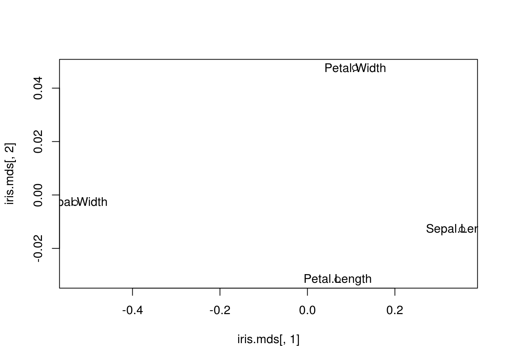
Matrice de proximité et distance euclidienne
Matrice de proximité : \(\Delta=(\delta_{i,j})_{1\leqslant i,j\leqslant n}\), avec \(\delta_{i,j}\) d’autant plus grand que les individus \(i\) et \(j\) sont semblables ou dissemblables.
\(\Delta\) positive, symétrique2, avec des \(0\) (dissimilarité) ou une constante (similarité) sur la diagonale.
Objectif : déduire de \(\Delta\) des points dans \(\mathbb{R}^d\).
Configuration : à \(d<n-1\) dimension fixée, \((x_i^{(1)},\ldots,x_i^{(d)})_{1\leqslant i\leqslant n}\) coordonnées des \(n\) points individus dans \(\mathbb{R}^d\).
Distance euclidienne pour la configuration \((x_i^{(1)},\ldots,x_i^{(d)})_{1\leqslant i\leqslant n}\) : \[d_{i,j}=\sqrt{\sum_{k=1}^d \left(x_i^{(k)}-x_j^{(k)}\right)^2}.\]
Configuration calculée de telle manière que \(d_{i,j}\simeq \delta_{i,j}\).
Calcul de la configuration finale
- MDS métrique :
- Configuration calculée directement à partir de \(\Delta\) par des méthodes classiques d’algèbre linéaire (centrage double, diagonalisation, etc…).
- Suppose que \(\Delta\) est une matrice de distances de type euclidien.
- MDS non-métrique :
- Suppose que \(\Delta\) n’est pas une matrice de distances de type euclidien.
- Utilise l’ordre de similarité (des plus semblables au moins semblables).
- Estime la configuration optimale à partir de \(\Delta\) par minimisation d’une fonction de STRESS : soit \(\hat{d}_{i,j}\) une estimation monotone de la distance entre les points \(i\) et \(j\) (p.e. régression sur \(\delta_{i,j}\)). Configuration optimale obtenue à partir de \(d_{i,j}\) minimisant \[\mbox{STRESS} = \sqrt{\frac{\sum(\hat{d}_{i,j}-d_{i,j})^2}{\sum d_{i,j}^2}}\]
- Solution obtenue par convergence d’un algorithme de minimisation pas à pas.
Exemple : MDS métrique
d = dist(iris[,-5])
iris.mds = cmdscale(d,20)
plot(iris.mds[,1],iris.mds[,2])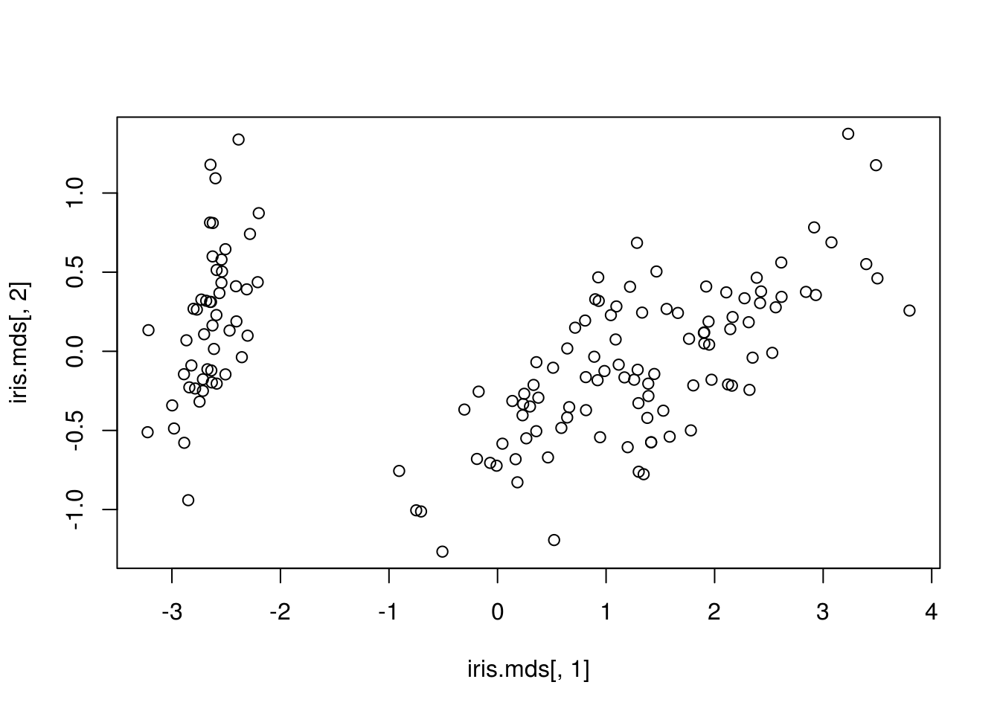
plot(iris.mds[,1],iris.mds[,2],
col=rainbow(3)[iris$Species])
Exemple : MDS non-métrique
library("MASS")
d = dist(swiss, method="canberra")
swiss.mds=isoMDS(d,k=10)initial value 3.886843
iter 5 value 2.424561
iter 10 value 2.096726
iter 15 value 1.919281
final value 1.887041
convergedplot(swiss.mds$points[,1:2])
text(swiss.mds$points[,1:2], labels=rownames(swiss))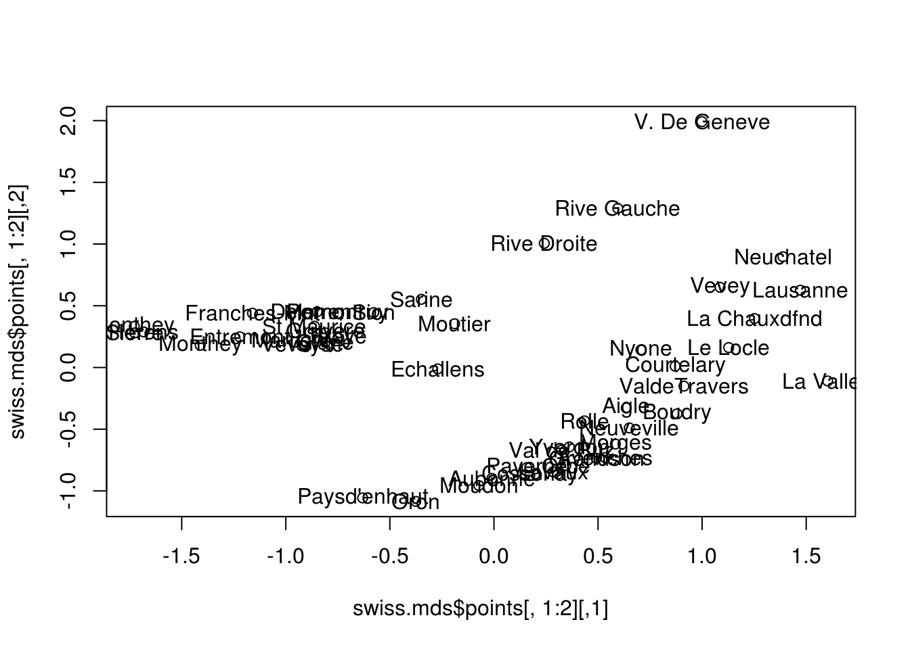
TP : les villes de France
- Matrice des distances kilométriques entre 47 villes de France. (données)
- Charger les données dans R
villes = read.table(
"donnees/Distances_Inter_Villes_Matrice.csv",
header = T, sep = ";", row.names = 1, dec = ",")
villes[1:5, 1:5] amie ando ange bale laba
amie 0 1020 440 560 590
ando 1020 0 760 1130 830
ange 440 760 0 770 160
bale 560 1130 770 0 940
laba 590 830 160 940 0- Effectuer un MDS sur cette matrice.
- Représenter les données dans le(s) premier(s) plan(s) obtenus.